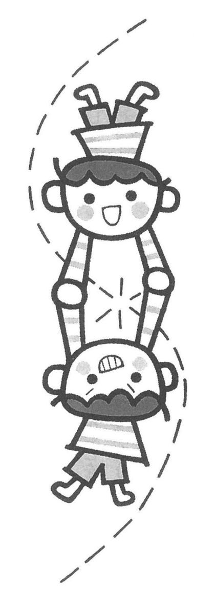

| 親子のカウンセリング教室 (灯台ブックス) | |
| 織田尚生 | |
| (2000) | |
お母さん、私の悩みをわかって！
親子のカウンセリング教室
東洋英和女学院大学人間科学部教授
織田尚生
灯台ブックス１１９
この電子書籍は、縦組みの底本を元に作成しました。
まえがき
この本の中には、悩みや問題を抱えた子どもたちに対して、お母さんやお父さんが、そして家族全体が、どのように取り組んだのかが語られています。そのような取り組みを助けたのが、本書に実名で登場するカウンセラーの先生たちです。子どもとお母さんたちへの先生方による援助のありさまを、わたしが物語としてまとめました。
現代の、子どもたちの抱えている問題はさまざまです。学校に行けない子どもや、吃音の子どもや、盗癖のある子どもや、のどが渇いても「お水がほしい」といえない女の子も、この本には含まれています。少し年齢の高い子どもには、食事に問題のある摂食障害の女の子や、自分のからだから出る臭いに悩む高校生のお話もあります。
本書に書かれている、子どもたちとその家族の人たちの、傷つきや課題との取り組みは、カウンセリングの物語として読んでいただきたいのです。プライバシーの問題で、この本に登場する人たちを傷つけることがないように、事例の記述には注意を払いました。物語はみんな事実にもとづいていますが、特定の人だとわかるようなところは省いてあります。
この本に書かれている事例は、子育てと家庭教育のための雑誌『灯台』に、「カウンセリングと家庭教育」として、二年余り前から連載されている記事の中から、第一回からの十八回分をまとめたものです。熱心な読者の方々に支えられて、連載は今も続いています。多くのお母さんたちに愛読していただいており、読者の希望でＰＴＡの集まりで、わたしが講演を依頼されたこともありました。驚いたことに、小学生の女の子たちが、この記事を読んでくれているということもわかりました。そのような読者の声を誌上で読み、執筆者として、励まされる思いがしました。
こころが傷ついている子どもたちが癒されていく道筋を、できるだけわかりやすくお話しするように努めました。わかりやすくは書いてありますが、遊び治療を行なう際にカウンセラーが心がけなければならない、留意点などにも触れていますので、心理相談室で子どもたちやお母さん方の援助を担当している、こころの専門家の先生たちにも、目を通していただきたいと願っております。
何よりもわたしは、本書に登場する子どもたちとその家族の方々が、傷つきに向き合い、それからの回復と癒しに真剣に取り組んでいる姿から、強い感銘を受けました。今回改めて読み直し、わたし自身思わず、こころがジーンとすることが何度もありました。これらの人たちと、困難な道のりをともに歩んだ、カウンセラーの先生方に、こころから敬意を申し上げたいと思います。
本書の刊行には、第三文明社の『灯台』編集部の方、本書の編集を直接担当してくださった方に、それぞれ大変お世話になりました。以上の皆さんに、深く感謝いたします。
二〇〇〇年一〇月
「東洋英和こころの相談室」にて 織田尚生
Contents 目次
目次
装丁●小松陽子デザイン室
イラスト●しまざきむつこ
お母さん、私の悩みをわかって！
親子のカウンセリング教室
Counseling❶お母さん、わたし学校好き
お母さんがいないと学校に行けない雪子さん。雪子さんは、お母さんが本当にわたしを好きなのかという不安がそうさせていたのです。
●一人では行けない●
雪子さん（仮名）は小学校一年生です。五年生のお兄ちゃんと二人きょうだいです。小さい時からお兄ちゃんのすることは、何でも同じにやってきました。学校へ入る前は行くのがとても楽しみで、入学後しばらくは毎朝張り切って登校していました。
ところが五月の終わり頃から、学校で時々先生に「お腹が痛い」と訴えるようになりました。それでも家では元気がよく、帰ってくるとすぐお友だちのところへ遊びに行っていたので、お母さんは安心しきっていました。七月に入ってまもなく、朝ちょっとしたことで怒ったりぐずったりして、なかなか学校に行こうとしません。お母さんは「がんばりすぎて疲れたのかな」と思い、お友だちの家まで送ってやって、何とか学校に行かせていました。しかしそのうち登校してからも泣いていて、先生からの電話で迎えに行くということが、たびたびになりました。
雪子さんの突然の変化にお母さんはついていけず、彼女のことがわからないままに夏休みになりました。休みの間、彼女は元気にすごし、これなら二学期は心配ないなとお母さんはほっとしていました。
二学期の最初の日、雪子さんはまったく登校できず、お母さんは困惑しながら彼女を学校まで送り、先生にお願いして帰ってきました。雪子さんはお母さんがいなくなると元気に遊んでいます。そんな姿を見て先生は、お母さんに甘えているだけだから二、三日お母さんが送ってくれれば大丈夫だと思いました。
しかし雪子さんの朝の状態はだんだん悪くなっていきます。それでもお母さんが帰ると元気なので、プールの時、彼女に黙ってお母さんに帰ってもらいました。プールから出た彼女はパニックになり、泣き叫んで手がつけられません。すぐにお母さんに迎えに来てもらいましたが、この日以来雪子さんはお母さんからまったく離れられなくなってしまいました。
はじめのうちお母さんは学校を休ませたくないと思っていましたが、毎朝ぐずる雪子さんにお母さんのほうが疲れ、そんなにいやなら休んでもいいよと思うようになりました。ところが彼女は学校に行きたがります。プールの一件があってから、お母さんは彼女といっしょに教室に入り授業を受けて、三時間目が終わると帰るという毎日になりました。
●赤ちゃんの時から●
雪子さんはお父さんの転勤で関西に生まれました。生後三ヵ月で、お兄ちゃんが幼稚園に入りました。社宅だったので、五人のお母さん方で順番に送り迎えをしました。お母さんは雪子さんを置いたまま幼稚園に行き、帰ってきた時には泣いていたということがたびたびありました。八ヵ月になると人見知りが強く、四、五歳になっても一人で遊べず、いつもお母さんが相手をしていました。ですからお母さんのこころの中には、「手がかかって育てにくい子」という気持ちが強くあります。
一歳半で東京に戻ってきました。三歳の時、社宅から移り、父方祖父母のマンションに住むようになりました。社宅には遊び仲間がたくさんいましたが、マンションには子どもがいません。その上お隣にはお父さんの両親がいたため、お母さんも緊張の連続で、雪子さんにとってマンションでの生活は決して居心地のよいものではありませんでした。
幼稚園に入った年の五月の連休明けに、朝ぐずって泣きましたがお母さんは無理やり連れて行きました。幼稚園に行ってしまうと元気に遊ぶので、その後も何日か引っ張って連れていったそうです。連休後のぐずりは二年目にもありました。お母さんのこころの中には、小さい時から人見知りが強かったので「この子は新しい人や場所にはなかなかなれないけれど、無理に連れて行けば大丈夫」という気持ちがありました。
●こころのメッセージ●
子どもとしては、大人から見るとたいしたことではない些細なことがとても大変で、生きることを根底からゆすぶられるほどに感じてしまいます。雪子さんが赤ちゃんの時、社宅で一人にされた体験は、彼女にとってものすごく怖いものだったのかもしれません。彼女には何がなんだかわからないけれど、二回も家が変わります。そのとき周りの環境がすっかり変化しました。お母さんも適応するのに大変だったでしょう。赤ちゃんの時の一人にされた恐怖がずっと尾を引き、不安が強くなると彼女の行動にブレーキをかけている感じがします。
それでもどうして不安になるのか、雪子さんにはよくわかりません。「どうしてお腹が痛くなるの」とか「どうして一人で学校に行けないの」と聞かれても、答えることができません。彼女は学校が好きだし、学校には行きたいのです。しかし一人では行けないのです。
●学校に行けない理由●
お母さんは困って、カウンセラーの小林弘子先生に相談しました。このような場合、子どもがカウンセラーから、遊び治療（プレイセラピー）を受けることがあります。雪子さんがプレイセラピーを受けようとしなかったので、お母さんが小林先生に面接を受けることにしました。子どもの問題解決のために、お母さんが面接を受けることがあるのです。
雪子さんの問題について、小林先生は次のように考えました。彼女が赤ちゃんの時一人にされて泣いていた時の体験は、「死」と隣り合わせのようなものすごい不安だったのではないか。死の不安を拭い去るには彼女がお母さんにたくさん世話をされ、「お母さんはわたしのことが本当に好きなんだ」とからだで感じることが必要ではないか。それを今彼女は、お母さんのからだと時間を使ってやり始めたのではないか。小林先生はこんなことを、お母さんにお話ししました。
お母さんは小林先生の助言を受け入れました。お母さんも、雪子さんに学校に行きたい気持ちがあることは感じていました。そのため時間の許す限り、学校にいっしょについていくことにしたのです。お母さんにとって、毎日学校に行って教室で娘といっしょに授業を受けるのは、並大抵のことではありません。お母さんが持っていたプライドをこころの隅に押しやって、彼女を愛しているということを彼女が信じてくれるようにと、一生懸命がんばりました。そのかいあって彼女は、二年生の三学期から一人で学校に行くようになりました。お母さんは娘が三年に進級するまで、小林先生の面接を受けました。
●お母さんの面接●
これまで述べてきたのは、小林先生の記録です。確かに赤ちゃん時代に見捨てられたことによる雪子さんの傷つきを、お母さんの愛情によって癒すことは必要なことでした。小林先生の見方を大切にしながら、少しわたしの考えを書いてみましょう。
雪子さんのお母さんは面接を通して、ご自分の子ども時代を振り返ることもされました。自分自身に向き合うのは時にしんどいことですが、お母さんは娘のためにがんばってよかったと思っています。母親面接は子どものことを相談する場になるだけでなく、お母さん自身のことを話すところでもあるのです。
お母さん自身三人姉妹の、真ん中に生まれました。子どもの時お母さんは、姉や妹と比べて自分は親から大事にされていないと、いつも思っていました。そして自分のことをちっとも好きになれませんでした。そしてお母さんは、どうしてもお兄ちゃんと雪子さんを比べてしまい、妹のほうを好きになれない自分に気づいたのです。知らず知らずのうちに、兄のほうを大切にしていたと思いました。
●娘を好きになれない●
小林先生との面接を通してお母さんは、なんとなく自信の持てなかった自分のこころが癒されていくように感じました。そして「自分が嫌い」という気持ちが少なくなるとともに、雪子さんに対しても不思議にいらいらせずに接することができるようになったのです。間もなく自然に、娘は一人で学校に行き始めました。
家族の誰かが傷ついていると、その本人ではなく代わりの誰かが荷物を引き受けてしまうことがあります。雪子さんの登校しぶりの場合は、お母さんが子ども時代からの傷を治して自分を受け入れられるようになったことで解決したのです。
Counseling❷お母さんも恋を夢みたの？
知らず知らずのうちに人のものを盗んでしまう娘。じつは母親の愛情が得られないために、物やお金を盗んでいたのです。
●なぜこんなことをするのかわからない●
晶子さん（仮名）は中学二年の女の子です。色白でかわいくて、性格が明るく、学校で人気があります。男の子からよく家に電話がかかってきます。体格は普通です。何の問題もなさそうです。彼女は問題も悩みもないように見えますが、お母さんにとって一つ困ったことがありました。
それは晶子さんの盗癖についてです。お母さんは娘が幼稚園の頃から気づいていました。彼女はいつの間にか、近所の子どものお人形を自分のものにしていました。小学校に入るといつも、買ってやったことのないおもちゃや文房具を持っていました。お母さんは彼女を厳しく叱ったけれど、効果がありません。小学校三、四年生になるとお母さんの財布から、お金を盗むようになりました。中学校になってからその額がふえ、万単位の金がなくなります。現場を見られた時には、「お母さんの財布にいくら入っているか見ているだけ」と言い訳します。問い詰められると、「なぜこんなことをするのか、自分でもわからない」と言うのです。
●晶子さんの家族●
両親と二歳上の兄と晶子さんの四人家族です。お父さんはサラリーマンで、現在単身赴任中です。お母さんはしっかりした人で、お父さんの留守の家を二人の子どもを抱えて、一人で守っています。晶子さんのお兄さんはからだが弱くて、繰り返し手術が必要でした。お母さんとしてはいつもどうしても、病気がちのお兄さんのほうに関心が向いていました。
家族は晶子さんが中学校へ入るまで、お父さんの転勤によって、各地を転々としました。お母さんにとって、官舎での近所づきあいは大変でした。人づきあいが少し苦手なお母さんは、家族以外の対人関係は少なくしていました。そのうえ病弱な長男の世話で、主婦仲間でおしゃべりするゆとりもなかなか持てなかったのです。お父さんは誠実で仕事熱心ですが、おとなしい性格です。子どもを大声で叱るようなこともありません。大事なことは、どうしてもお母さん主導で決められるようになります。この傾向はお父さんの単身赴任で、ますます強くなりました。元気で明るい娘に十分気を配ることができなかったとしても、無理のないことでした。
●お母さんの相談●
お母さんは、中学二年になっても盗癖が直らない娘のことがとても心配だったので、心理相談室をたずねました。相談室では、母子併行面接が行なわれることになりました。併行面接とは、子どもの問題解決のために、親子が別々のカウンセラーから面接を受けることです。お父さんが子どものために面接に参加することもありますが、普通は子どもとお母さんが面接を受けます。
晶子さんの場合には、本人の面接は女性のカウンセラー、お母さんの面接は篠原道夫先生が行ないました。娘の面接は一〇ヵ月で終わりました。盗癖が克服されたのです。子ども担当のセラピストが、有効な援助を行ないました。セラピストは晶子さんの盗みについて、もちろん叱ったりすることはありません。彼女自身おもちゃやお金が欲しかったというだけで、盗んだ本当の理由は自分でもわからないのです。問題は自然に解決したように見えました。ここでは彼女がなぜ良くなったかということを知るために、主にお母さんの面接について触れてみましょう。
お母さんは晶子さんのために、篠原先生から面接を受け始めました。盗みから発展してやがて髪を染め、援助交際を繰り返すようになるのではないかと、お母さんは心配です。家での様子など、娘のことばかり話していました。
●母と娘●
ある時バイクの二人乗りが見つかり、晶子さんとお母さんは学校から呼び出しを受けました。彼女は校則違反のために校長室に呼ばれ、先生から「厳重注意」の処分を受けました。それでも彼女は悪びれたところがなく、職員室に行って先生方と楽しそうに会話をし、麦茶をごちそうになっています。このような光景を見てお母さんは、反対に暗かった自分の学校時代を思い出しました。
お母さんは娘のことを話しているうちに、自身の子どもの頃を語るようになります。お母さんの父親も、晶子さんのお父さんと同じように単身赴任ばかりしていました。お母さんには二歳年下の妹がいて、妹はおとなしい彼女とは対照的に、とても明るい社交的な性格でした。「わたしは妹に比べて、人に好かれない」と、いつも感じていました。なぜかわからないけれど、お母さんは母親からよくぶたれました。妹に許されることが、彼女には許されないのです。篠原先生にお母さんは、「わたしはあの頃から、人が怖かったのです。人に頼るのが下手。今少しずつ、治ってきている途中だと思います」と話しました。
●お母さんの思春期●
いつの間にかお母さんは娘のことよりも、自分の子ども時代のことをたくさん話すようになっていました。お母さんは中学校時代、目立たない女の子で、母親からも先生たちからも認められず、「自分は暗い」とずっと思っていました。しかし彼女は、篠原先生との面接の中で、中学二年の頃の淡い恋の体験を思い出しました。
相手は同級生で、勉強のよくできる男の子でした。クラスの友だち以上のものではなく、デートをしたこともありません。片思いです。それでもお母さんにとっては、まるで昨日のことのように新鮮な感じでよみがえります。その男性が現在海外に駐在しているということを聞いて、「一目会いに行きたい」と言います。いつもまじめで一生懸命なお母さんがこんなことを言い出したので、家族はびっくりしました。このような変化にはお母さん自身が戸惑い、「わたし変になったのでしょうか」と篠原先生に尋ねたりしています。
●人生を生き直す●
お母さんは晶子さんに対して、「彼はわたしのことどう思っていたと思う？」と、何度も意見を求めます。娘を叱ってばかりだったお母さんが、いつの間にかすっかり変わっていました。そういう時には二人の立場は逆転して、娘のほうがお母さんの相談相手をつとめます。
カウンセラーに支えられてお母さんは、自分自身の思春期をもう一度生き直しました。こころの中には、明るくて恋にあこがれる自分も住んでいたのです。お母さんが新しい自身を発見した時、娘の気持ちがよくわかることに驚きました。晶子さんは明るく見えても、寂しかったのです。お母さんが母親からわかってもらえなかったように、彼女も理解されていませんでした。
●わが子を理解する難しさ●
「わたしの愛情が得られなかったために、晶子は物やお金を盗っていたのではないか」と、お母さんは気づきました。わが子のこころを理解するのは難しいことです。そのためには遠回りのように見えても、誰かの支えを得て、自分の子ども時代をもう一度生き直す必要があるのかもしれません。わたしたちは自分のこころを通してしか、人のこころがわからないのです。
Counseling❸お母さん、ぼくのこと嫌い？
幼児虐待をするお母さん。お母さんが子どもの頃、親から「よい子」を強いられたため、知らず知らず、息子が自分らしく生きるのが許せなかったのです。
●どうして言うことを聞いてくれないの●
三歳四ヵ月の男の子、春樹君（仮名）はお母さんに連れられて、ぼんやりした疲れた顔で相談室にやってきました。彼は最初の子どもで、下に妹がいますがまだ赤ちゃんです。お母さんはことあるごとに彼を強く叱り、エスカレートしていく自分の気持ちを抑えることができません。そのことがお母さん自身の心配になり、相談に来たのです。お母さんも彼と同じように、疲れた顔をしていました。
春樹君は言葉の発達も早く、頭のよい子でした。しかし、三歳になってもおむつを外したがらず、おしっこはないと言って逃げ回り、お母さんをてこずらせます。おやつのときにはお菓子を際限なく食べ続け、制限しようとしても適量で満足することができません。ちっとも言うことを聞いてくれない彼に、お母さんは自分が拒否されているように感じました。
一方で春樹君には、手洗いなど毎日やっていることでも、「どうするの？ やっていい？」と、何度もお母さんに確認しなければ動けないという面もありました。彼にしつこく聞かれるのは、うっとうしいことでした。お母さんは自分のしつけの失敗を見せつけられているように感じ、いやでたまらなくなります。
●わたし、虐待しているかもしれない●
お母さんは春樹君と家の中にいると、いらいらが募ってきます。そのためできるだけ、彼を家の外に連れ出して時間を過ごすようにしていました。ところが公園で彼は、自分がそのとき使っていないおもちゃでも、お友だちに貸してあげることができません。そればかりか、人の持っているおもちゃがほしいと思ったら、お友だちの手から無理やり取り上げて泣かせることもしょっちゅうです。お母さんが叱ると、彼は大声で泣き叫びます。家ではそんなふうには泣かないのに、お母さん以外の人がそばにいると、ことさら叫び声を上げるのです。
春樹君が「これ見よがし」に泣き、近所の人たちといっしょになって自分を責め立てている、とお母さんには感じられました。その場にいたたまれなくなって、お母さんは彼を連れて逃げるように家に帰ります。お母さんはどこに行っても、彼といると気の休まることがありません。家に戻ると「わたしはこんなに努力しているのに」という思いで、彼に対する怒りが込み上げてきます。お母さんが「あんたなんか嫌い。出て行け」と言いながら彼を叩き始めると、その手がなかなか止められないのです。彼が二歳を過ぎた頃から、そんな親子の関係が始まりました。
●お母さんの傷つき●
お母さんは、二人姉妹の妹に生まれました。いつもお姉さんと比べられて育ちました。覚えている限り両親は、甘えさせてくれたことも、わがままを許してくれたこともありませんでした。病気になっても、「おまえのせい」と責められました。それでもお母さんは両親に認められようと、勉強を一生懸命がんばりました。ところがテストでよい点を取ってきても、「一○○点にまだ足りない」と言われました。お母さんのこころの中には次第に、「やってもやってもまだ足りない」感じがつきまとうようになっていきました。
彼女は、職場で知り合った男性と結婚しました。夫は会社の仕事に没頭して、お母さんの悩みを真剣に聞いてくれません。お母さんは春樹君のことを、夫に何度も相談しましたが、彼はいつも「そのうちよくなる」と言うばかりです。彼女は自分のつらい気持ちを夫に伝えることができず、かえってわかってもらえない苛立ちが募ってしまいます。夫や息子のために会社を辞め、精一杯がんばってきたのに、少しも報われないという気持ちになります。「自分だけが社会から取り残されてしまった」と思い、やりきれなくなるのです。お母さんも深く傷ついていました。一時は夫との離婚を、真剣に考えました。
●遊びによる治療●
春樹君は相談室で、遊びによる治療を受けることになりました。この治療は遊戯療法やプレイセラピーと呼ばれます。子どもの遊びを通してカウンセラーは、子どものこころが人とつながれるようになるまで手助けします。彼の場合、カウンセラーの茂木久美子先生とこころがつながるようになるとともに、お母さんともこころが通じるようになりました。たいていはお母さんにも、相談相手としてカウンセラーがつき、親子併行面接が行なわれます。
この場合の併行面接は、春樹君とお母さんの面接が同室で行なわれました。普通は子どものプレイセラピーとお母さんの面接には、別々の部屋が用いられます。春樹君はどうしても、お母さんから離れるのを嫌がりました。親との間に安心できる関係を築けている子どもは、セラピーが終わったらまたお母さんに会えることを信じることができます。彼は不安が強かったので、一人になるのに耐えられませんでした。茂木先生が彼の遊びの相手をしている間、お母さん担当のカウンセラーは同じ部屋の少し離れたところで、彼女から話を聞きました。
●わるい子を生きられますか●
春樹君は遊戯療法の部屋で、はじめは視線がうつろで黙って一人で遊ぼうとしました。それでも回を重ねるうちに、茂木先生が自分の遊びを手伝ってくれる人だとわかりました。半年が経過すると、彼のこころが茂木先生とつながってきました。彼はだんだんと遊びを通して、怒りや不安などいろんな気持ちを先生にぶつけてくるようになりました。
たとえば春樹君は遊びの中で、ホース電話で茂木先生とお話をしているとき、突然大声を出して先生の耳を痛くしました。じゃんけんに勝ったからと、先生の手をとても強く叩きます。時には遊びの途中でわざとおもらしをして、先生を困らせます。遊びの終わりの時間が来ても、どうしても止めようとしないこともあります。茂木先生ばかりでなく、同じ部屋にいるお母さんやお母さんのカウンセラーの頭まで、叩いて回ることもありました。
二歳頃から四歳頃にかけては、第一反抗期と呼ばれます。どんな子どものこころにも、よい子ばかりでなくわるい子も住んでいます。この時期に限らないのですが、子どもはよい子とわるい子をともに生きる必要があります。春樹君のお母さんが子どものとき親に認められようとして、よい子ばかりしか生きられなかったことを思い出してください。
お母さんは気づかずに、子どものとき自分が許されなかった、自分らしさを出すことを彼に対しても許せなかったのです。
茂木先生がしたことは何でしょうか。先生には春樹君がわるい子を生きられない苦しみがわかったので、彼の怒りや攻撃を受け入れることができました。攻撃があまり激しくて限界を超えていると感じたときには、彼に「だめ」ということを伝えました。彼は先生とのこころのつながりを支えにして、先生をからかうというような形で、上手にわるい子も生きられるようになったのです。

●子どもが変われば親も変わる●
親の傷つきが癒されることによって、子どもに何かしなくても問題が自然に解決することはあります。お母さん担当のカウンセラーも優れた方でした。しかし今回は、茂木先生が受け入れる形で、春樹君がよい子とわるい子をともに生きられるようになったことが、お母さんのこころまで変化させたのです。彼が四歳半のときにこの親子の治療は終わりました。その頃には彼のお母さんへの反抗は、言葉を使ってのユーモラスなからかいや、甘えるしぐさで表されるような、彼女が受け入れやすいものになっていました。お母さんの息子を見るまなざしは柔らかくなり、虐待の問題も解決していました。
Counseling❹ぼくにはいい先生がいるんだ
言葉をハキハキと話さない息子を注意するうちに、息子が吃音（どもり）になり、目をぱちぱちするチック症状も出てしまいました。原因は大人が子どもを受け入れられないことにあるようです。
●お母さんの悩み●
悟郎君（仮名）は五歳です。家族は四人で、両親と二歳下の妹がいます。妹には問題がありません。お父さんは会社員ですが、世間体を気にするところがあります。お母さんは何をやるにも一生懸命の人です。とくに子どものことには熱心です。お母さんのお母さんが、つまり悟郎君の母方の祖母は今は亡くなっているけれど、長い間病気をしていました。お母さんには自分の母親が健康でなかったという負い目があったので、子どもはしっかり育てなければと、こころに決めていました。
お父さんの両親は、悟郎君のおうちの近所に住んでいます。しばらく前にお母さんは、お姑さんに悟郎君の言葉の発達の遅れを指摘されました。彼はもともとおとなしくて、あまりハキハキと話すほうではありませんでした。それは彼の個性で、発達の遅れではありません。しかしお母さんは、お姑さんの言葉で傷つきました。このときからお母さんは、悟郎君にもっときちんとしゃべるようにと、たびたび注意するようになったのです。
悟郎君はやがて、言葉の最初の音を繰り返すようになりました。吃音（どもり）の症状です。もともと悟郎君には感じやすいところがあって、四歳のころには目をぱちぱち動かすチック症状もありました。お母さんは息子のことが心配でたまりません。
●相談室を訪ねて●
悟郎君には、吃音と、目をぱちぱちするような運動性のチックと、両方見られました。これらは現れ方は違っても、同じようなこころの働きが関係しています。子どもが不安や不満を感じているけれど、それをどう解決してよいのかわからないときに、吃音や目をぱちぱちする動きとして出てきます。ですから、子どもに直すように言っても、自分ではなぜかわからずそうなっているものなので、やめられないのです。
困ったお母さんは、お父さんに相談しました。お父さんは世間体を気にして、どこか相談機関に援助を求めることには賛成してくれません。そこでお母さんは、やむなくお父さんにはないしょで、ある相談室を訪ねることにしました。どこの相談室でも相談の秘密は守られることになっており、よその人に知られることはないので、お父さんのなさった心配はいりません。
相談室で悟郎君は、岡本智子先生から遊戯療法（プレイセラピー）を受けることになりました。お母さんは別の女性カウンセラーと、面接室でお話ししました。子どもをがんばって育てようとしてもうまくいかないこと、夫が自分を十分支えてくれないこと、お姑さんに気をつかうこと、実家の母親が長い間病気だったので、子どもの頃から安心した気持ちになれなかったことなど、お母さん担当のカウンセラーに、毎週話し続けました。お母さん面接によって彼女のこころの傷つきが癒されていったことは、悟郎君の回復の大きな助けになっています。それでもここでは、おもに岡本先生と彼のプレイセラピーについてお話ししましょう。
●悟郎君の怒り●
大人でも子どもでも区別なく、わたしたちは不安や不満を感じます。大人の場合は気の合う人に話すなどして、解消して楽になる方法を知っているのです。子どもでは周りの大人がうまく受けとめてやらないと、言葉にできない不満がどんどんたまってしまいます。
岡本先生は悟郎君と毎週一回、五〇分のプレイセラピーを始めました。悟郎君はドラゴンボールＺという人形を使って、岡本先生と戦いごっこをしました。彼の攻撃は激しくて、人形を動かすだけでなく、自分の手で先生のからだを思いきり叩きます。岡本先生は悟郎君に叩かれる痛さを辛抱し続けました。先生は痛くてもがまんして、彼の怒りを受けいれてあげることが大切だと考えていたのです。
悟郎君は岡本先生といっしょに、戦いごっこのほかに、サッカーゲームもやりました。子どもの治療で遊びがなぜ用いられるのでしょうか。子どものこころにたまった不満や不安は、言葉ではうまく表すことができず、カウンセラーと遊ぶことで初めて表現できるからです。ところがサッカーゲームでも、悟郎君はずるをして、いつも彼ばかりが勝つように、自分に有利なルールを作り上げます。岡本先生は大人げないと思いながら、ずるをする彼に腹が立ちました。
●痛いからやめて●
岡本先生は四ヵ月の間、悟郎君に叩かれたり、ゲームで負ける役目ばかりやらされていました。そのうちに先生は、毎週彼に会うのがつらくなってきました。悟郎君のこころにたまった不満を、叩いたりずるをしたりする方法によって吐き出させてあげることで、彼の吃音が治ると思っていました。ところがやっぱり、遊びの途中でも緊張の強いときには、吃音が出てきます。
先生は悟郎君にぶたれるのに耐えて、彼の気持ちを受けいれようとしましたが、辛抱を続けることでかえって、こころの中で彼を拒否している自分を見つけました。岡本先生はこれではいけないと考えて、無理をせず、できる範囲で彼と関わることにしました。
からだをあまり強くぶたれたときには、「痛いからやめて」とやめさせるのです。サッカーゲームでも悟郎君のずるを許さないことにしました。相談室のおもちゃを家に持って帰りたいと彼が言ったときにも、「先生にはできることとできないことがあるの」と話して、持って帰りたくてたまらない思いをわかりながらも、希望をかなえてあげませんでした。
このようなやり方で、岡本先生が悟郎君との関係で一線を守るようになってから、一ヵ月ほどで家庭での吃音も、相談室で遊んでいるときの吃音も、いつの間にか消えるようになくなっていました。悟郎君がおもちゃを持って帰りたくてもできないこころもとなさ、どうしようもない不満から先生を叩いていたのをとめられたやるせなさ、ずるを禁止されてゲームに負ける悔しさ、岡本先生には彼のこころのそれぞれが、ひしひしと伝わってきました。
じつは何でも悟郎君の思い通りにさせていたときよりも、彼の本当の気持ちが、先生にはよくわかるようになったのです。思い通りにならなくて苦しんでいる彼を見て、岡本先生は彼をとてもいとおしいと感じました。
●負けることができる強さ●
相談室のプレイセラピーで、子どもに対して、制限したり禁止したりすれば効果があると思わないでください。悟郎君の吃音が岡本先生との遊び治療でよくなったのは、先生と二人の関係の中で、彼にできるだけ自由に遊ばせ、限界を超える部分だけを、辛抱しないといけない彼のつらさを想像しながら、「やめて」と伝えたからです。
ゲームでずるをしなくなった悟郎君は、ときどき負けるようになりました。岡本先生も、彼のためにわざと負けてみるようなことはしません。でも彼は、かえって岡本先生が好きになりました。彼は「ぼくにはいい先生がいる」と、三人の名前をあげましたが、その中の一人は岡本先生でした。
悟郎君はゲームで負けるようになり、戦いごっこでやっつけられる役もするようになりました。それで本当に、彼のこころは成長して強くなったのです。どんな子どもにも、大人だってそうですが、必ず苦手な面や弱いところがあります。そのような弱さを自分の一部として、抱え続けていけるようになったからこそ、悟郎君は強くなったのです。
このことに関しては、ゲームや戦いごっこの相手が信頼できる岡本先生だったから、悟郎君は自身の弱さを見せることができたともいえるでしょう。弱さに向き合えるようになると、新たな強さが育ってきます。彼は頭を打って血が出て、病院まで行ったのに泣かなかったことを、岡本先生に話しました。近所の子どもたちの中で、ぼくが一番こま回しがうまい、とも言います。
岡本先生と悟郎君の遊びによる治療は一〇ヵ月で終わりました。二人が毎週相談室で会うことによって、彼のこころは先生とつながったのです。先生とのこころのつながりが、チックや吃音に関係する弱くて傷つきやすい部分と、泣かずにがんばったり上手にこまを回したりする強い部分とを、つなげることを助けたのではないでしょうか。彼はこころのつながりによって回復し、やがて元気な男の子として、小学校へ入学しました。
●わたしたちが学ぶこと●
お母さんは悟郎君が元気になるとともに、お姑さんや近所のお母さんたちの言葉にひどく傷ついたり、左右されたりすることがなくなりました。彼は弱いところもあるけれどがんばっている自分に、自信がもてるようになったのです。お母さんはそれを見て、希望を感じます。ないしょにしていたお父さんにも、彼が相談でよくなったことを話しました。なんだか、家族全体の雰囲気が温かくなったのです。
子どもを大切にすることは、何でも買い与えたり、何でも許してあげたりすることではありません。親の気持ちとして許せないものは許せないし、買えないものは買えないのです。制限のないところに自由はなく、苦しみのないところに喜びはありません。悟郎君が制限なく自由に振る舞っていたときには、彼は自由の楽しさを味わうことができませんでした。遊び治療が終わりに近い頃は、自分で工夫してプラレールを丸くつなぎ、電車を走らせる遊びに夢中でした。こころをつなぐ試みです。親として大切なことは、子どもの苦しみと喜びとを、自分自身のこととして、いっしょに抱えていくことでしょう。
Counseling❺見て、見て、ぼくのウンチ
もうすぐ五歳なのに、ウンチのおもらしをする息子。じつはお母さんにいっぱい甘えたいのに、年子の妹にお母さんが奪われたと思って、必死に我慢をしていたことの表れだったようです。
●おもらしがとまらない●
四歳九ヵ月の健太君（仮名）は、相談室にお母さんと二人でやってきました。
彼は五歳近くなってもまだ、家でも保育園でも便のおもらしを、たびたびしてしまうのです。これは遺糞症と呼ばれます。保育園でおもらしをした後で健太君は、保母さんにお尻を洗ってもらいます。彼は同じ年齢の仲間の中に入ることができず、いつも保母さんのそばにいたり、年下の子どもとばかり遊んでいます。保育園に適応できません。そのうえに吃音（どもり）もひどくて、何を言っているのか聞き取りにくいほどでした。
●健太君の家族●
お母さんは、調理関係のお仕事をなさっています。体格は普通で、気性のさっぱりした人です。子どもに対するこまやかな心配りは、自分で少し苦手と感じています。それでも相談室で健太君が元気になったのは、お母さんのがんばりのたまものです。家族は四人で、他にお父さんと一歳五ヵ月違いの妹がいます。
近所に、父方のおじいさんとおばあさんが住んでいます。会社員のお父さんはおとなしい性格で、お母さんと話し合ったり健太君といっしょに遊んだりすることは少なくて、実家にしょっちゅう出入りしていました。健太君の便のおもらしについても、お母さんはお父さんに相談することができず、一人で悩まなければなりませんでした。
健太君は内気で、やさしい、そして几帳面な子どもです。妹は気が強くマイペースで、周囲の人の反応を気にしません。お母さんは彼のことを、「おとなしいけれど、問題のない子ども」と思っていて、そんなに困らされたという記憶はなかったのです。
健太君は一歳五ヵ月で妹が生まれたときに、お父さんの実家に二ヵ月の間、預けられました。この時期に健太君が両親から引き離されていたことも、彼のこころの成長に何らかの影響を与えたのでしょう。妹の出現は、彼の親とのつながりを危うくするものでした。
三歳になった健太君は、二歳の妹といっしょに保育園に通い始めました。年子の妹は気が強く、お母さんにも積極的に甘えることができました。健太君は保育園でおもらしを続け、上手に話せません。保育園でも妹のほうが活発で、目立ちます。おとなしい彼はどこにいても妹に圧倒され、お母さんに遠慮しているように見えました。
この頃行なわれた三歳児健診では、健太君は「自閉的な傾向がある」と言われました。一時的なものでしたが、人に関心が少なく、お母さんがそばにいても無視して、電車のおもちゃのほうにずっと興味を示し続けたといいます。
子どものこころは、親かそれに代わる人とのつながりのないところでは成長できません。妹が生まれてからの健太君は、お母さんとの絆が危うくなりました。彼の困難を、お父さんも助けられませんでした。誰ともつながれなくなった健太君は、こころの窓を閉じる傾向を示し、自閉的だと言われたのです。
●ヤダモン君●
だいたい一週間に一回、健太君は、相談室で「遊び治療」を受け始めました。このような場合たいてい、お母さんにもカウンセラーがついて、彼の遊び治療とお母さん面接とが併行して行なわれます。しかしこの時には、他のカウンセラーに時間のゆとりがなかったので、渡辺岸子先生が健太君の遊び治療を担当し、お母さんからもときどき短時間お話を聞かせてもらうことにしました。
遊び治療を開始したとき健太君は、おどおどした気弱な態度で、渡辺先生に対するさまざまな要求も出せない状態でした。遊びの種類も、おままごと遊びのような静かなものでした。それでも彼は、相談室で遊ぶようになって一ヵ月もすると、大きな声でお話をするようになり、活発になってきました。あんなに気弱な健太君が、なぜ元気になり始めたのでしょうか。
渡辺先生は温和で、そして感性豊かなカウンセラーです。先生と健太君がいっしょに遊ぶ時間を積み重ねることによって、彼はプレイルームが守られた安心できる場所だと感じるようになりました。そこでは自由に振る舞ってもいいということがわかったのです。
健太君はプレイルームの中の砂場で、砂にまみれながら、乱暴な遊びをするようになりました。彼はロボットのおもちゃを棚からとってほしいと渡辺先生に要求しておきながら、いざ持っていくと「そんなおもちゃイヤダモン」と言って、いつも先生を困らせます。二人の間ではこんなことがあってから、彼はヤダモン君と呼ばれることがありました。
●男の子を生きる●
健太君はお母さんと二人だけで、相談室に通うのが楽しみになりました。長い間妹に奪われていたお母さんを、おもらしや吃音のために相談室に通うようになって、ようやく取り戻したのです。
遊び治療の場面で健太君は、人形の女の子を乱暴に扱い、「おまえは悪いやつだ」と、繰り返し口に出して言いました。渡辺先生はこれを聞いて妹とお母さんへの、健太君の長い間の不満が表現されていると感じました。このような思いを、妹が小さかったために彼はじっと我慢してきたけれど、本当はもっといっぱいお母さんに甘えたかったのです。
相談室で遊び治療が終わった後で健太君は、お母さんに抱き付いて、胸に触ったり、キスしたりします。家ではいたずらも激しくなりました。それでもお母さんは、「今まで出せなかったものを、いま出している」と、好ましく見ていました。
今まで一人でがんばってきたお母さんは、初めて子どもと過ごす時間を楽しいと感じ、こころの底から健太君をかわいいと思うことができました。健太君の変化が、お母さんにも影響したのです。
遊び治療が始まって三ヵ月後、健太君は、遊びの中で物語を作るようになりました。たとえば、つぎのようなお話です。
彼は筋肉の盛り上がった若い男性の人形を高いところから投げ落とし、その上に怪獣をいくつも乗せて、男性を下敷きにします。男の人は死んでしまったようです。ところがしばらくすると、男性の人形は生き返って今までより強くなり、怪獣たちをやっつけます。渡辺先生はこのような遊びを見ていて、健太君がとても印象的な物語を作り、それを遊びで表現していると想像できました。彼のこころの傷つきが癒されて、強い男の子として生まれ変わる物語だと思ったのです。
●ぼくのウンチを受け取ってくれますか●
四ヵ月が経ちました。健太君はずいぶんしっかりしてきて、妹にたいしてもお兄さんらしく振る舞うことがふえてきます。妹に何かと指図しながら遊びますが、よく面倒も見ています。
排便のほうにも変化が出始めました。まだもらすこともあるのですが、三回に一回は「ウンチ出る」とお母さんに知らせます。健太君はおまるにウンチが出ると、うれしそうに「見て、見て」とお母さんを呼びに来ます。お母さんもウンチを見て「よくやったね」と、こころからよろこぶことができました。
子どものこころが健康に育つためには、お母さんがわが子のウンチをよろこんで受け取ってあげることが必要です。ここでのウンチはウンチそのものだけでなく、子どもの不満や怒りなど、美しくないとされるものをも意味します。お母さんが健太君の怒りや不満をこころから受け入れられるようになったので、七ヵ月でおもらしも吃音も完全になくなりました。
●お父さんと息子●
たくましくなった健太君は、自分からお父さんにじゃれつくようになったのです。お父さんの態度も変わり、休みの日には健太君とキャッチボールをします。家を空けて、たびたび実家に行くこともなくなりました。お母さんとお父さんは仲良くなり、健太君は元気に小学校に入学しました。健太君の遊び治療は、家族全体を変化させたといえるでしょう。
Counseling❻ぼく、優等生じゃなくてもいいんだね
勉強も運動もよくできて、リーダーシップをとってきた息子が、いつかクラスの乱暴者となっていたのです。両親の期待に応えたい気持ちが「勝つ」ことへの執着になったようです。
●ひとりぼっち●
雄太君（仮名）は、小学三年の活発な男の子です。この学年にしては大柄で、見たところは元気そうです。笑顔を見せますが、でもどこか寂しそうなところもありました。彼はもともと、勉強も運動もよくできる子どもでした。リーダーシップをとってきた彼がクラスにとけ込めなくなり、三年生になっていろいろな問題が出てきました。ほかにも勉強やスポーツがよくできるライバルの子が現れて、彼だけが注目される存在ではなくなったのです。今回はクラス委員にも選ばれませんでした。
クラスの中で雄太君は、自分に関心を向けてもらおうとして、お友だちにちょっかいを出します。男の子の上着を引っ張って後ろに倒したり、女の子の手の甲をなめたりかんだりすることもあります。そんなことをするとけんかになりますが、いったんけんかになると相手が攻撃を止めても、適当なところで切り上げて仲直りするということができません。授業中にも席を立ってお友だちを叩きに行ったり、教室から勝手に出ていったりします。一方では、自分の机に突っ伏していることもあります。優等生だった雄太君が、お友だちの気持ちを理解できず、すっかり乱暴者と見なされるようになってしまいました。
よくできていた勉強でも、うまく行かないところがあります。塾で先に進んでいる算数はいいのですが、国語では登場人物の気持ちが理解できません。得意の算数の時間も途中で退屈してしまい、じっと席についているということができません。担任の先生は困ってしまって、家庭訪問の機会に雄太君のお母さんにお話ししたのです。
●熱心なお父さん●
家族は五人で、両親と姉と妹がいます。お父さんは大変教育熱心な方でした。お母さんは担任の先生から、相談室に行ってみることを勧められました。最初はお父さんとお母さんと雄太君の三人で、相談に訪れました。相談室の女性のカウンセラーは、ご両親と彼から話を聞きました。お母さんは若く見えましたが、実際にお父さんより十歳くらい年下でした。彼が先生やクラスのみんなに迷惑をかけていることに、お母さんはショックを受けていました。お父さんは、ただ一人の男の子として期待をかけて、雄太君を厳しくしつけたのがいけなかったのではないか、と反省しています。
カウンセラーはお話をうかがって、雄太君はもう一人別のセラピストと遊び治療をしてこころの傷を治すことが大切だ、と思いました。カウンセラー自身は、お母さん面接で、彼の親子関係を話し合っていくことにしました。
このとき雄太君の担当になったのが、若いカウンセラーの山口義枝先生です。お父さんは彼に、勉強もスポーツもできる子どもに育ってほしいと思いました。そのため塾と水泳教室とサッカークラブとに、あわせて週に五日も通わせています。
お母さんはどうも、お父さんの教育方針に賛成できないところがありました。お母さんから見ると、お父さんは厳しい人ではなくて、やさしいけれども頼りないところがあると感じます。お母さんが子どもを叱るときには、お父さんも同じ言葉を繰り返して叱ってしまいます。子どもたちから少し距離を置いて、温かく見守るということができません。熱心すぎて、干渉するお父さんだったのです。
●親の気持ちを押しつけるとき●
お父さんのお父さんは教育者でしたが、彼が高校生のときに病気で亡くなりました。そのためお父さんは、大学に進むことができず、父親代わりになって弟や妹の面倒を見ました。
会社に入って仕事に関係する資格をいくつも取りましたが、自分がやむをえず進学できなかったという悔しい思いがいつもありました。大学は出ていないけれど同僚には決して負けない、という気持ちでした。そして息子には、自分と同じ思いをさせたくないと考えたのです。
お母さんも子どものときから、苦労して育ちました。お母さんの実母は彼女が一歳のときに亡くなり、六歳のときに二度目のお母さんが来ました。この間お母さんは亡くなった実母の実家に預けられ、母方の祖父母に育てられたのです。おじいさんとおばあさんはよい人でしたが、本当のお母さんのようなこまやかな心配りは期待できません。
雄太君のお母さんは、子どもたちにお母さんらしく接するやり方に、自分が十分慣れていないと感じていました。彼が赤ちゃんのとき、泣いても放っておくお母さんを見てお父さんは、子どもに対する彼女の愛情が足りないと思ったのです。
お父さんとお母さんとの間には、気持ちにこのような食い違いがありました。お母さんから見れば、自分と子どもたちは、熱心だけれど干渉するお父さんから、見張られているようにも感じました。お父さんは会社でその日にあったことを、みんなお母さんに話します。愛情はわかるのですが、あまりに几帳面なお父さんを、お母さんはわずらわしいと思うのです。
このような両親の気持ちのずれが、雄太君のこころを傷つけました。両親の気持ちを一つにするのは、彼が学校でいつも優秀であることでした。
●勝ち負けへのこだわり●
当時の山口先生は、大学院を出たばかりの若い臨床心理士でした。相談室で親子の問題に取り組む際には、お母さんやお父さんよりも、子どもの気持ちのほうがずっと理解できると感じました。先生は子どもたちの遊び治療をしているとき、自分が幼いときに傷ついたいろいろな出来事を、すぐに思い出すことができたのです。雄太君は最初、自身のこころの傷つきを認められませんでした。傷に向き合うつらさを支えたのが、彼と山口先生との人間関係でした。
雄太君の遊び治療では、初め山口先生と勝ち負けを競うゲームばかりしていました。彼の遊びで最も特徴的だったのは、勝負への強いこだわりでした。ホッケーゲームでもオセロでも彼は、たとえずるをしてでも、絶対に勝たねばなりません。ホッケーゲームで盤を傾斜させ、自分のゴールに山口先生のボールが入らず、負けないような状況を作ります。
しかしそうして雄太君が勝った試合の後で、「地震だあ」とホッケー盤を勢いよく揺らして、選手の人形が盤から飛び出したり、ひっくり返るようにします。彼は負けることには耐えられないけど、ずるをして勝っても、こころはまるで地震で家が崩れたときのように、ぐちゃぐちゃに傷ついている、と先生は思いました。
●お父さんらしさって何だろう●
山口先生のすぐれたところは、自分の弱さを認め、子どものこころの傷つきに向き合えることでした。雄太君の家庭では、「だめな子」であることが許されません。だから彼は学校でも相談室でも、いつも「できる子」でなければならないのです。しかし相談室で雄太君は、弱さや傷ついているところを見せても、先生は笑って受け入れてくれることがわかってきました。ゲームに負けるような「だめな子」でも大切にしてくれ、傷ついた部分もわかってくれると感じたとき、彼は負けることに耐えられるようになっていました。
雄太君の遊び治療とお母さん面接とは、開始から一年あまり後、四年生の夏休み前に終わりました。彼は以前よりも落ち着き、クラスに受け入れられるようになりました。お誕生会には、一三人も男の子たちが集まってくれたのです。大好きなサッカーのクラブでは、彼をとてもかわいがってくれるコーチが現れました。
がんばり屋のお父さんは、どうなったのでしょうか。自分の力ではどうすることもできなかった息子の問題が、本人とお母さんの努力で解決していくのを見て、少し変わってきました。辛抱して子どもへの口出しを控えるようにすれば、案外子どもは自分の力で伸びていくものだ、ということがわかったのです。お父さんは今では、干渉しないで見ていて、家族にとって本当に必要なときに自分が乗り出せばよいと感じています。
Counseling❼先生、ぼくに本気で向き合って
学校で授業中に、席に着いていられず、人から嫌がられる言葉を無意識のうちに言い続けてしまう──。本音の自分が反乱を起こしてしまったようです。
●汚い言葉がとまらない●
輝雄君（仮名）は、小学校四年生の男の子です。担任の先生の勧めでお母さんといっしょに、相談室へ緊張した表情をしてやってきました。
なぜかわからないけれど、彼は授業中しきりにそわそわして、自分の席に着いていることができません。何より困るのは、突然「ウンチ」など排泄に関する言葉や、性的な言葉を大声でしゃべりだして、とまらなくなることでした。授業の妨げになるので、先生から叱られます。なぜそんな言葉をしゃべるのかと理由を聞かれても、輝雄君自身わけがわからないので、何も言えず黙ってしまい、ただ涙があふれてくるばかりでした。
これは汚言症と呼ばれ、重症のチック障害によく見られる症状の一つです。輝雄君が不満や怒りなど、いろいろな気持ちを感じないように押さえ込んできたのがもう限界に来ているという、こころの叫びです。
わたしたちは誰でもこころの中では、普通は口にしない汚い言葉でも平気で思い浮かべます。建前の自分ではなく、本音の自分がこころの中に住んでいて、そのようなもう一人の自分と連絡をとりながら、健康な生活を送っているのです。
輝雄君の場合、彼のまじめな性格と家庭の環境とによって、本音の自分をあまりにも痛めつけてしまったために、その本音の自分が反乱を起こしてしまったのでしょう。自分のこころの中にもう一人の自分がいて暴れているような、そんなつらい状態でした。だから汚い言葉をやめようと思っても、自分の意思ではやめることができないのです。
●大好きなおじいさんが遠くに●
彼の家族は両親と、二歳下の弟、そして母方の祖父母との、六人家族です。このうち、輝夫君が大好きなおじいさんは、彼が二年生の時から、単身赴任で遠くに行ってしまい、寂しい思いをしました。
おじいさんは会社の重役で、お母さんは小さいときからこの人、つまり彼女のお父さんをとても尊敬しながら育ちました。そのような父親との強い結びつきは、お母さんを社会の中で専門的な仕事をしていく、しっかりした女性に育てました。彼女は経済的にも自立したのです。
お母さんは自分の選んだ会社員と、恋愛の末に結婚しました。現在は子育てをしながら結婚前からの、幼稚園の先生という仕事をずっと続けています。
お母さんは実家を離れて、夫と二人で家庭を持ちました。それでも輝雄君が生まれてからは、仕事を続けるために、赤ちゃんを実家で見てもらうことが必要でした。このほうが便利でしたから、やがて家族は母方の祖父母と同居することになりました。輝夫君のお父さんは、誠実で仕事熱心な方です。妻と二人の男の子を大切に思っていますが、会社人間のために帰りが遅いので、子どもたちと接する時間はどうしても少なくなります。
輝雄君には赤ちゃんのときから、自家中毒や気管支喘息の発作をたびたび起こすようなデリケートなところがありました。
弟は積極的な性格で、学校の成績も兄に比べてよいそうです。
輝雄君はおとなしくて聞き分けがよく、弟の面倒もよく見ました。弟が三歳になったときに彼は幼稚園に入りましたが、幼稚園ではしばらく落ち着きのない状態が続きました。初めての集団生活は、輝雄君にとって負担になったことでしょう。
●先生、もっと本気に投げて●
相談室では、別の女性カウンセラーがお母さんの面接を、茂木久美子先生が輝雄君のプレイセラピーを担当しました。彼はすらっと背が高く、頭の回転の速そうな男の子でした。「何か困っていることはないの」とたずねても、「ない」と短く答えるだけで、ほとんど話そうとしません。
輝雄君は遊び治療として、サッカーゲームなどゲーム盤を使っての遊びと、野球やサッカーや卓球やちゃんばらなど、からだ全体を使ってする遊びを好みました。
本当は汚い言葉が出ることに困っているのですが、まだ茂木先生との間に安心できる関係ができていないので、それに触れられないのです。
最初の遊び治療が終わった輝雄君が、お母さんと顔を合わせたときに顔がすっと硬くなったので、茂木先生は彼がお母さんとの関係でも傷ついていると思いました。そして彼は、お父さんと思われる男性が昇天する漫画を描き、「サラリーマンの天国行き」と説明しました。
家庭の中でのお父さんの弱さと存在感のなさを表していると考えられました。
遊び治療での輝雄君とのやりとりは印象的でした。
彼がこだわったのは勝ち負けではありません。キャッチボールではボールを、「思いっきり投げて」「もっと強く本気で投げて」と先生に要求し、やりとりの一球一球によって、自分の力の限界に挑戦することを望みました。治療者の茂木先生も、彼の迫力に突き動かされ、受けて立つ気持ちになり、自分の運動能力の限界以上を出したと思えるくらい、必死にボールを追いかけ、彼に返していました。
このようなやりとりが続いた後は、輝雄君はすっきりとした穏やかな表情になります。不思議に茂木先生も、すがすがしい気持ちになりました。野球やゲームは彼にとって、それ自体を楽しんだり、勝ち負けを問題にする以上に、言葉で伝えられないことを切実に表現する手段だったのです。ボールのやりとりは、「君のことを大切に思っている」という先生からのメッセージを、彼が実感をもって受け止める方法でもありました。
●傷つきに向き合う●
茂木先生と輝雄君との真剣勝負は、六ヵ月も続きました。彼はその頃から肩の力が抜け、リラックスして遊べるようになりました。先生が必死にキャッチボールやゲームに取り組んでいると彼は、「がんばってね」といたわりの言葉をかけるゆとりを示します。そんな輝雄君を見て茂木先生は、彼のことを男の子として頼もしく感じたのです。
プレイルームの中の先生と輝雄君との間に、安心できるこころの世界ができました。彼は遊びの合間に少しずつ、自分の本当の思いを茂木先生に話し始めました。テストでよい点を取らないと、お母さんやお父さんに叱られるというのです。
茂木先生はこのとき、三〇点の答案がポケットの中から出てきてお母さんに叱られた、四年生の頃の自分を思い出して、彼の痛みがわかる気がしました。
だからこころの世界の中で輝雄君は、傷ついた自分を含めて「本当の自分」を、先生に見せることができたのです。
遊び治療は、一年ほどで終わりました。この頃には彼は、治療が終わって部屋から出てからも柔らかい表情のままで、お母さんとおしゃべりしながら、自宅に帰っていくようになっていきました。
授業中の落ち着きのない状態や、嫌がられる言葉を言い続けたりする症状も、すっかりなくなっていました。

●大きな存在の大切さ●
輝雄君はなぜ、汚言症に苦しむことになったのでしょうか。
もともと家族には中心になる人の存在が必要です。彼の家庭では、同居していたおじいさんがその役目をしてきました。しかし、おじいさんは彼が二年生のときに、単身赴任をして家からいなくなってしまいました。お父さんもお母さん家族を代表して責任を持つ、一家の中心にはならなかったのです。子どもが成長するときには、怒りや傷つきを含む本音の自分を正面から受け止めてくれる大きな存在が、家庭の中に求められるのです。
こうした大きな存在を、仮に父性と呼ぶことにしましょう。大きな存在は、男性でなくてもいいんです。女性でも、子どものこころの「本当の自分」を正面から受け止め、自らの本音の自分とぶつかることができるだけの強さがあれば十分です。
輝雄君の場合、本音の自分が誰からも受け入れられなかったために、こころの中で暴れだして汚言症になっていたのです。
茂木先生は輝雄君に対して、父性の役割を果たしました。遊んでいる間にいつも先生は、「ぼくを子ども扱いしないで、正面から関わってほしい」というメッセージが、彼から向けられていると感じました。今の社会では、かっこいい建前ばかりが強調されます。
わたしたちは一人の親として、泥臭くても、子どもの本音と向き合えているかどうかを、たえず問い直したいものです。
Counseling❽お母さん、わたしのこと本当は嫌い？
何度注意しても、自分の髪の毛を抜いてしまう娘に理由を聞くと、「つまんないから」との答え。弟と同じように育ててきたのに、「困った娘」と悩んだお母さん自身の中に、母と娘のこころを救う、大きな鍵があったのです。
●お母さんからの電話●
「娘のことで相談したいのですが。じつは娘が、自分で髪の毛を抜いて、はげてしまって困っています」という電話が、お母さんから相談室にかかってきました。
カウンセラーの小林弘子先生は、このお母さんにお会いすることにしました。お母さんとの初めての面接で、次のようなことがわかりました。
両親と子ども二人の四人家族です。お母さんは三十五歳で、パートの仕事をしています。子どもたちは、六年生の友子さん（仮名）と四年生の弟です。お父さんは三十七歳の会社員です。
お父さんが、はみ出した友子さんの布団を直しに行ったとき、彼女の額のところがはげていることに、初めて気づいたのです。
お母さんが娘に、なぜ自分で髪の毛を抜くようなことをするのかと尋ねると、友子さんは「つまんないから」と答えます。何度注意してやめさせようとしても、効果がありません。
友子さんの学習机の下には、抜いた髪の毛がたくさん落ちています。
●二人とも同じ育て方をしたのに●
お母さんは娘の友子さんについて、どのように接したらいいのかわからなかったのです。こんなふうに語りました。
「友子は無口でおとなしく、家ではほとんど話をしません。
幼稚園では、毎日おもらしをしていました。学校に上がってもお友だちはできないし、勉強も出来が悪く、何をするにも自信がもてません。本当にぐずで、だめな子なんです。
ところが六年生になったら、子ども会の副会長の仕事を引き受けてきちゃいました。『できっこないからやめなさい』と言ったのに、『平気だもん』と、すましているんですよ。そんな友子を見ているとわたしのほうで腹が立ってきて、娘が普通の子どもとして生まれているのかどうかさえ心配になります。
それに比べて弟のほうは明るく、お友だちもいっぱいいるんです。弟は学校の成績もよく、クラスのリーダーで、先生にいつもほめられます。弟は友子と大違いで、わたしはあの子がいるから救われているんです。
わたしは二人とも、同じように育ててきました。それなのにこんなに違うのは、なぜでしょうか。友子がおかしくなければ、こんなに違うわけないと思います。わたしは子どもに一生懸命接してきました。問題があるのは友子なんです」
●家族を代表する人は誰ですか●
家族の中の誰かがこころの困難を抱えているとき、直接カウンセリングを受けるのは、困っている本人とは限りません。受ける人は家族を代表する選手のようなもので、代表選手ががんばって自分の問題に取り組むことによって、選手自身ばかりでなく、家族全体が変わる可能性が出てきます。
友子さんの家族の場合はどうだったでしょうか。お母さんは娘さんだけに問題があると思って、相談に訪れています。
小林先生は、お母さんからお話を聞いて、このように考えました。お母さんは娘の悩みや苦しみ、そして能力や可能性を、うまく見つけられなくて困っているのではないでしょうか。家族全体に問題があるかもしれないのに、娘さんだけが悪いと思っているようです。
それでも小林先生は、お母さんの一生懸命のところにこころを動かされました。お母さんが家族の代表として、こころを開いて面接を受けてくれれば、友子さんのカウンセリングはしなくても、家族全体が変わることで、彼女の抜毛症はよくなるだろうと思いました。
小林先生は、不安になっているお母さんの気持ちをできるだけ支えて、くじけないように援助したいと思いました。
でも、お母さんが娘さんのことをこころから理解し、受け入れられるようになるまでには、長い時間がかかりました。
●お母さん自身の傷つき●
お母さんは娘さんのために、毎週相談室に通い始めました。面接が始まった頃は、「困った娘」として、友子さんに対する不満や怒りを一方的に話し続けたのです。
しかし、面接の回数が進むにつれてお母さんは、自分自身のことに目が向いてきました。お母さんには、三歳年上のお姉さんがいます。お姉さんは顔がきれいで、気立てもよく、母親から、いつも一番にかわいがられていました。
お母さんは子ども心に、とても寂しかったそうです。
お母さんは、このように話しました。
「わたしは自分のことなんて、今まで考えたこともなかった。でもわたしの中にはいつも、姉に勝ちたいという気持ちがあったんでしょうか。わたしと姉とは三歳違うのに、わたしは、姉が結婚して一年後に結婚し、姉の子どもが生まれて一年後に友子を出産したんです。考えてみたら、三歳違うんだから結婚も三年後でもいいのに、いつも姉に『負けてなるものか』という思いがあったのかもしれません。友子を姉の子に負けないよい子にしなきゃと、あの子のお尻を叩いていたんですね。
ところが、友子はどう見ても、姉の子よりも劣っていてとても勝てない。それにひきかえ弟は頭もいいし、運動神経も抜群で、わたしにとって自慢の子でしたから、わたしの気持ちは一気に弟にいってしまったんですね。友子には、かわいそうなことをしてきちゃいました」
●友子さんの変化●
家ではほとんど話さなかった友子さんが、少し変わってきました。お母さんの変化とともに、娘さんも変わり始めたのです。
友子さんはお母さんに、その日学校であったことを話してくれるようになりました。こどもだけが悪いと思っていたお母さんは、自分のほうにも問題があったことに気づいたのです。
それでも、人のこころが変わるのは、簡単なことではありません。友子さんはお母さんが、本当に自分のことを大切に思ってくれていると信じてよいのか疑って、お母さんを試すような行動をとりました。たとえば、こんなことがありました。
六年生の友子さんは、初めて生理になったのです。そのとき汚れた下着をピアノの下に丸めて隠していたので、お母さんは洗って洗濯機に入れるように教えました。しかしそれから後も、繰り返しピアノの下に押し込めてあります。
また中学校に入って、せっかくお昼のお弁当を持たせても、ほとんど食べずに残して持って帰ります。その上、今まで弟とけんかなどしたこともなかったのに、今では毎日のように取っ組み合いの激しいけんかをしています。
このような友子さんを見て、お母さんはとても不安になりました。お母さんは「わたしは友子のためにこんなに一生懸命やっているのに、そんなにわたしのことが嫌いなの」「もうこれ以上努力しても無駄ではないか」と、ともすれば悲観的になりました。
しかし、小林先生はお母さんを支えようとして、友子さんは本当はお母さんを信じたいのだ、ということを伝えました。
●カウンセラーの思い●
友子さんの抜毛症は、お母さんの面接が始まってから半年後には、すっかりよくなっていました。
弟のことにばかり夢中になっていたお母さんに対する、「こっちを向いてほしい」という願いを、友子さんは髪を抜くという行動で表していたのではないでしょうか。お母さんの面接は三年半続きましたが、友子さんが高校に合格したところで終わりました。
お母さんは自分の姉と比べて自身を、愛されない子どもだと思ってきました。
ところが小林先生から見ると、そういうお母さんと友子さんが、重なって見えました。友子さんも、弟に比べてお母さんから十分な関心を向けられなかったのです。
カウンセラーとの関係の深まりによって、お母さんは「人に大切にされる」経験をしました。母親から愛されていないと信じてきたお母さんの話を聞くとき、小林先生はいつも、自分が子どものときに母親に対してどんな思いをして育ってきたのか、こころの中で思い出していました。
信頼できるカウンセラーは、相談に来た人の悩みや傷つきを、他人事ではなくて自身のこととして、こころの中で感じるのです。小林先生とお母さんとの共同作業によって、お母さんと友子さんは二人とも、傷ついたこころが癒されていきました。
Counseling❾お母さん、ぼくのこころは壊れやすいんだよ
一人遊びばかりで、お友だちと遊べない道夫君が、お母さんといっしょに、相談室にやってきました。お母さんへのカウンセリングと子どもへの遊び治療により、傷つきやすいこころをもった道夫君の中に、自分でこころの傷を治す力が生まれました。
●友だちと会話ができない●
道夫君（仮名）は、四歳八ヵ月の男の子です。家族はほかに、両親と三歳年下の弟がいます。
お父さんは技術関係の会社員で、まじめでおとなしい方です。お母さんも道夫君が生まれるまでは役所に勤めていましたが、今は家にいます。大学卒で、少し小柄な、口数が少ない人です。お母さんはこころのやさしい、どちらかといえば人中に出るのが苦手なところがあります。ご近所の奥さんたちと長い時間おしゃべりするのは、性に合わないと思っています。
お父さんのお仕事の関係で、家族は地方から東京に越してきました。そのためにお母さんは、東京の生活に慣れるのに苦労しました。そして、新しい環境に慣れるのは道夫君にとって、もっと大変でした。
道夫君は東京で幼稚園に入りました。彼は、幼稚園で落ち着きがなく、一人遊びばかりでお友だちと遊べないし、先生とも目を合わせることができません。幼稚園の先生は相談室での遊び治療が役立つと考えて、お母さんに行ってみるように勧めてくれました。
道夫君は小柄で、色の白い、笑顔のとてもかわいい子どもです。おうちでは話ができるし、お友だちが来るとミニカーなどで遊ぶので、お母さんは彼のことをあまり心配していませんでした。
でも、家や砂場でいっしょに遊んでいても、お友だちとの言葉のやり取りがありません。山口義枝先生はお母さんの話を聞き、彼といっしょにプレイルームで遊んでみました。そして、少し自閉的なところのあるお子さんだけれど、遊び治療でよくなっていくだろうと思いました。道夫君はとても不安が強くて、安心して人とこころを通わせることができないのです。
●遊び治療の始まり●
お母さんは道夫君への接し方を学ぶために、相談室で別のカウンセラーの面接を受け続けました。お母さん担当のセラピストも優れた人でした。道夫君の問題と関係することとしてお母さんは、彼が一歳過ぎの頃、弟を妊娠中に流産の恐れがあり、寝てばかりいてあまり彼の相手をしてやれなかった、と話しています。
初めての遊び治療の内容について、話しておきましょう。山口先生はお母さん面接の先生から、こんなことも聞いていました。いろんな出来事を、彼は全部覚えているというのです。
たとえば、二歳のときに熱いやかんに手で触ろうとして、お母さんからきつく注意されたことがありました。それからあと、二年以上経ってもずっと、やかんを見ると、「熱いからだめ」という言葉を繰り返します。道夫君がとても感じやすく、傷つきやすいこころを持っていることがわかります。
「おもちゃのあるところへ行こうね」と言われて連れてこられた道夫君は、プレイルームに入ると、パトカーと消防車を取り出して、スイッチを入れました。室内は二台のミニカーの大きなサイレン音で騒然となりました。困った道夫君はミニカーに触り、眉をひそめて何か早口でぶつぶつ言いますが、山口先生には何のことかわかりません。それでも、彼のこころが今とても不安だということだけは、先生にもわかったのです。
最初の時間の後半になり、道夫君が先生のところにクレーン車を持ってきて、「なに」 「なに」と繰り返して聞きました。先生は、「これで物を持ち上げるの」と答えました。彼は「上げるの」「上げるの」と言いながら、クレーン車で重い積み木を持ち上げようとします。重すぎて、積み木は持ち上げられるはずがありません。すると道夫君は、「みっちゃんが壊した」と叫びながら、部屋の中を一回りしました。ものごとがうまくいかないと、なんでも自分の責任だと思うようでした。
遊びの時間が終わったことを伝えると、「捨てるの？」「ポイするの？」と大声で泣きながら帰っていきました。遊び治療が終わることは、道夫君自身が捨てられることだと感じたのです。
●山口先生とお母さん●
道夫君はとても傷つきやすいけれど、人とこころを通わせることはできる、と山口先生は思いました。彼は水彩絵の具を使ったお絵かきも好きでしたが、筆が少し毛羽立っただけでも、壊れたと感じるのでした。やはり「みっちゃんが壊した」と不安になります。
先生は遊び治療の時間が始まる前に、筆を前と同じに直しておきました。大好きなミニカーも、前回と同じ場所にないと、なくなったと思うので、道夫君用の小箱に大切にしまって帰り、次に来たときには同じ状態であるようにしました。傷つきやすい子どもは、変化にとても弱いのです。
山口先生は、プレイルームが守られた場所になるようにこころを配りました。そうすると、三ヵ月も経ったときには不安が和らいで、「みっちゃんが来たよー」と、笑顔で相談室にやってくるようになりました。道夫君の遊びが変わってきたのです。それまでの、ミニカーを走らせるだけの遊びから、物を壊して組み立てる遊びもするようになりました。
シルバニアハウスという人形の家を、工事用のミニカーで壊してから、組み立て直すのです。これを何度も繰り返します。彼は周りの世界に積極的に働きかけ、自分でこころの傷を治すようになりました。自身でできないことは、人に助けを求めます。ミニカーのドアが取れたら、「山口先生、修理」、と差し出します。不安のために何でも覚えていたのが、忘れるようにもなりました。
セラピストとの間にこころが通うようになると、お母さんとの間も安心できるものに変わってきました。それまではお母さんに抱っこされるのを嫌がっていたのに、安心して抱っこされ、甘えるようになりました。
このような変化には、お母さんの努力と豊かな感受性も大いに役立っています。おうちでお絵かきをしたとき、道夫君が「夜だ」と言って、画用紙を真っ黒に塗ったのを見たお母さんは、「わたしが強く言いすぎたのかしら」と感じ、胸がいっぱいになりました。その時彼は、「お星さまだ」と、真っ黒の中に、金色の星をいくつも描いたのです。お母さんは救われた思いがして、こころが熱くなりました。
●壊すことが喜びに●
半年もすると、泣き虫だった道夫君が、とても活発になってきました。「いやだ」という、自己主張が強くなりました。物が見えなくなったり壊れたりすることをあんなに怖がっていたのに、今度は壊すことをとても喜ぶようになったのです。
プレイルームにあった陶器でできた船を、「壊す」と叫んで、床に叩き付けました。船は真っ二つです。道夫君も手伝って、山口先生は船を接着剤で修理しました。それでも彼は、船を投げるのをやめようとしません。何回も投げようとしました。そのたびに先生が走っていってとめていたのに、とうとうすきを見て前よりも強く投げつけました。ばらばらになって、もう修理はできません。
船を遊び治療に使えなくなった山口先生は、困ってしまいましたが、ふと気づくと、道夫君は箱庭の砂に水を入れて泥んこにし、泥沼にはまったブルドーザーがダンプカーに引き上げて助けてもらう遊びを、何度も繰り返していたのです。先生はいらいらした自分の気持ちがなごみ、救われた思いがしました。彼は癒す力を身につけました。
●道夫君の真剣な遊び●
一年経ったときに、相談室の引越しがありました。道夫君は慣れるまで不安になって、ミニカーを窓から外へ何度も投げようとしました。投げると、建物の壁と転落防止用の柵との間に挟まって、ミニカーが取り出せなくなって困るのです。ところが彼はそれがわかっていて、ゲームのようにそれをやろうとするのです。うれしさを抑えきれないような笑みを浮かべると、それは彼がミニカーをポイするサインで、先生はすぐ動いて抱きとめなくてはなりません。これは道夫君が発見した、彼に繰り返し関心を向けさせるための、とても真剣な遊びでした。
二年間の遊び治療によって、壊れやすかった道夫君のこころには、回復する力が生まれました。小学校へ無事に入学し、そこでの生活が軌道に乗ったところで、相談は終わりになりました。
Counselingわたしのことに干渉しないで
自分のからだから臭いが漏れて、人に迷惑をかけていると悩み、高校を休むようになってしまった生徒が相談室を訪れました。
●自分のからだの臭いが心配●
恵理子さん（仮名）がからだの臭いについて悩むようになったのは、高校二年の春からでした。こんな出来事がきっかけになったのです。
授業中に誰かがおならをしました。そのとき「恵理子がしただろう」と、疑われました。恵理子さんは黙っていて、「わたしじゃない」と、否定することができませんでした。
この出来事以来、彼女は自分のからだから臭いが漏れて、人に迷惑をかけている、と考えるようになりました。他人の視線や咳払いなども、臭いのために自分が非難されているしるしだと思われて仕方がないのです。
こうして恵理子さんは、みんなのいる教室に入るのが苦しくなり、たびたび学校を休むようになってしまいました。高校三年になってもよくならないので、相談室を訪れたのです。
家族の人たちについて、少し触れておきましょう。
お父さんは五十歳の職人さんで、小さな会社を経営しています。頑固で曲がったことが嫌いな、いまどきめずらしい、職人気質の人です。子どもたちにも厳しくて、娘に対して、夕方五時を門限だと言って強制します。門限を破ると、叱りつけるのです。中学卒業と同時に親方に弟子入りし、徒弟制度のもとで鍛えられ、四十台前半で、自分の店を持つことができたのでした。
お母さんは四十九歳で、主婦として家事をしながら、お店のことも手伝っています。彼女は地方の裕福な農家の次女として生まれました。大学に進みたかったのですが、父親が病気で亡くなり、進学をあきらめなければならなかったのです。そのため子どもに期待し、成績も気になるほうでした。子どもたちが傷ついているときも、その痛みをわかってやるよりも、子どものがんばりが足りないと思いました。
恵理子さんの家族は四人で、両親のほかに二十二歳のお兄さんがいて、お父さんのお店を手伝っています。
●両親に対する不満●
相談室では、大住誠先生が恵理子さんから話を聞きました。セーラー服をきちんと身につけた恵理子さんは、見るからにまじめな女学生という印象を与えました。しかし、自分のからだの臭いが気になるようになったきっかけについて話してくれた後は、下を向いたままで、自分からはほとんど話そうとしません。
「自宅から相談室まで電車で一時間あまりかかるけれど、電車の中でも自分の臭いが気になるので大変です」と訴えるだけでした。
毎週一回の面接を続けるうちに恵理子さんは、だんだん両親に対する不満を語るようになりました。彼女はおとなしい子どもで、親に対して反抗らしい反抗はしたことがなかったそうです。
小学校二年生のときに上級生からいじめられて、泣きながら帰宅したときにも、お母さんからは「上級生がわけもなくいじめるはずがない。おまえにも原因があるだろう」「くやしかったら、勉強で見返してやりなさい」と言われ、恵理子さんのつらさは十分わかってもらえなかったのです。
彼女が厳しいお父さんから叱られているときにもお母さんは、とりなしてくれたり、子どもの味方になってくれたりするようなことはありませんでした。
●秘密が漏れてしまう●
恵理子さんの不満は、だんだん両親に対する怒りに変わってきました。しつけの厳しいお父さんは、未成年者は親の保護のもとにあるからと言って、彼女に来た手紙を勝手に読むのだそうです。
また、家族の間にプライバシーはいらないからと、子どもたちの部屋に鍵をつけること許さず、部屋に無断で入り、机の引出しを開けたりします。
お母さんに対して恵理子さんが、「わたしの症状は、お父さんのわたしに対する接し方に原因があるかもしれない」と話したところ、「なんということを言うの。さんざんお父さんにかわいがられたくせに」と叱られました。叱られると彼女は、やっぱり自分が間違っているのではないか、と自分を責めてしまいます。
面接が始まってから、半年が経過しました。恵理子さんは大住先生に、安心して話ができるようになりました。カウンセリングでもっとも大切なことは、治療者との人間関係に支えられて、「自分は守られている」と感じられるようになることです。そうなって初めて、わたしたちはつらい現実にも向き合うことができるのです。恵理子さんがからだの臭いを気にし始めた頃のことが、前よりももっとはっきり思い出せるようになってきました。
恵理子さんは忘れていたのですが、おならの事件が起こる少し前に、彼女の試験の成績が、知らないうちにクラスの皆に知れ渡ってしまうということがあったのです。つまり、自分で漏らそうとしていないのに、大切な秘密が漏れてしまったのです。恵理子さんが学校で、心理的に守られていなかったことがわかります。しかし彼女は、それ以前から家庭でも守られていませんでした。
すでにお話ししたように、恵理子さんの知らないところで秘密が漏れることはよくありました。
彼女は「父から勝手に手紙を読まれたり、母に電話を盗み聞きされたりしたことが、みんな症状と関係しているかもしれない」と、大住先生に伝えました。
先生も、「恵理子さんの秘密が学校や家庭で守られなかったので、からだから臭いが漏れるという思いに囚われる病気になったのだろう」と理解できました。
●対人関係によって症状が変化●
面接が始まって一〇ヵ月後、恵理子さんは出席日数がぎりぎり足りて、高校を卒業することができました。しかし、まだ臭いが気になって、進学や就職はできませんでした。
それでもある作業所で、アルバイトを始めたのです。恵理子さんは仕事場の同僚として、お母さんと同年輩の女性と出会いました。
この年上の女性は、恵理子さんの仕事に必要以上に干渉するのです。してほしくないのに余計な世話を焼いたり、仕事上の細かいミスを追及したりします。
仕事場からの帰りにはいつも、この女性に対する怒りが込み上げてきたそうです。恵理子さんはその女性について大住先生に、「おばさんから監視されているように感じるときがあります。そんなときには、臭いがとても気になるのです」と話しました。
読者の皆さんに、次のことがわかっていただけるでしょうか。つまりここでは恵理子さんの、自分のからだから臭いが漏れているという思いに囚われる病気の症状が、彼女の対人関係によって左右されるまでに変化しているのです。
もちろん現実には、恵理子さんのそばに近寄っても、何か臭いがするということはありません。それでも以前症状がひどかったときには気になって、勉強も仕事も手につきませんでした。からだから臭いが漏れるという訴えは理解しにくいですが、職場のおばさんとの対人関係についての難しさはよくわかります。恵理子さんの症状は、理解しやすいものに形を変えたのです。こうなるとこころの癒しは、もうすぐです。
●親子関係の改善とともに●
恵理子さんの面接は、一年半で終わりになりました。彼女の自分のからだから出る臭いについて気にならなくなり、福祉関係の仕事につく、という希望を持つようになりました。そして実際二年後には、大住先生は彼女から、福祉の現場に就職できて元気で働いている、大学にも進みたい、という便りをもらいました。
臭いが気になるという症状がよくなっていくことは同時に、恵理子さんと両親との関係が改善されることでした。
何年かぶりの田舎への里帰りを夫に反対されて断念した母親を見て、「自分の意見を最後まで主張できなくて、お母さんがかわいそう」と、彼女は話しました。
父親についても、「やせ我慢をしているけれど、重い荷物を持つとしんどそうで、最近めっきり老けてきたように見えます」と語り、父母のよき理解者になりました。
わたしたち親は、子どもにどのような態度で接したらよいのでしょうか。
ここで取り上げたご両親は、恵理子さんの批判からわかるように、子どもとの間にこころ温かい関係をつくるのが困難でした。
しかし少なくとも、子どものことを真剣に考える、信念を持ったお父さんとお母さんでした。だからこそお二人は、子どものために相談室を探し出して、面接を受けさせることができたのです。
Counseling「やさしいお母さん」を見つけた
ダイエットの反動と勉強のストレスから、過食に走るようになってしまった生徒が相談室を訪れました。面接と箱庭療法を用いた治療の中で、お母さんとの親子関係に、原因があることがわかってきました。
●過食で困っています●
高校二年生の優子さん（仮名）が、相談室を訪れました。
優子さんは、すぐに気分がいらいらします。いらいらすると、つい過食に走ってしまうのです。たとえば、板チョコを二〇枚食べてから、食べ過ぎて吐いてしまったり、大きなジャムのびんを一度になめて空にすることが、たびたびあります。来年は大学受験なのに、いらいらする気持ちと、食べることが気になって、受験勉強が手につかないということで、とても困っていました。
優子さんは少し小柄で、きゃしゃな感じのする、セーラー服姿の女の子です。面接を担当した大住誠先生は、彼女の表情が乏しく、能面のように見えたのが気がかりでした。
優子さんの声ははっきりしていて、今どんなことに困っているのか、それはいつから始まったのかなど、わかりやすく説明してくれます。
彼女は高校一年生のときに、自分のからだが太りすぎていると感じてダイエットを始めたのですが、計画どおりに食べる量をコントロールするのは困難でした。実際には優子さんは、ちっとも太ってはいなかったのです。ダイエットに失敗したと思いこんだ彼女は、空腹を無理に我慢していた反動で、たびたび無茶食いをするようになりました。
彼女のダイエットと、その反動としての過食の原因としては、思春期になって容姿が気になるようになったことのほかに、学校の勉強もストレスになっていました。
優子さんの高校は進学校で、たびたび実力試験が行なわれ、廊下に成績順位が貼り出されます。情緒的な問題を抱えた生徒は、ほかにも少なくありませんでした。
●優子さんの家族●
両親と妹と、本人との四人家族です。お父さんは四十七歳の会社員、お母さんは一つ年下でパートの仕事をしています。妹は中学一年です。お父さんは会社人間で、家にいるときも娘たちと話し合うことは少ないといいます。そのうえ、優子さんが中学生のときには、地方に単身赴任して、会社の寮で暮らしていました。お父さんはおだやかで仕事熱心な人ですが、子どもたちのことはどうしても、お母さんに任せっぱなしになっていました。
お母さんは、地方の貧しい農家に生まれました。そのため、高校に進学することができませんでした。十六歳のときに集団就職で上京し、繊維関係の企業で女子工員として働いたのです。会社の中に設置されていた、定時制高校を卒業しました。彼女はまじめながんばり屋さんで、勤務態度や仕事ぶりを、会社で高く評価されていました。この会社は繊維不況のあおりを受けて倒産しましたが、彼女は人柄と能力を買われ、今度は関連会社の事務職として雇われることになりました。新しい会社でお父さんと知り合い、結婚しました。
お母さんの田舎には、おじいさん、おばあさん、それにお兄さんも健在ですが、なぜか実家とのつきあいはほとんどなく、話題にも上らないそうです。妹については、特に問題はありません。
●お母さんが怖い●
優子さんは初回の面接で、次のように話しました。お母さんが学校の成績について、とても口うるさいのだそうです。家計が大変だから、来年は現役で国立大学に合格してもらわねば困るといって、優子さんを追い詰めます。お母さんは怒るときに大きな声を出すけれど、同時に涙声になるといいます。そうやってお母さんに責められると彼女は、何かとんでもない悪いことをしてしまった気持ちになって、苦しくなります。
小中学校時代から、優子さんはよく勉強ができました。とくに小学校では優等生でした。しかし彼女にとって、それを維持するのはしんどいことでした。勉強しないでいるとお母さんに叱られるので、それが怖くてがんばったのです。お母さんは勉強だけでなく、彼女の生活全般について、口うるさく注意しました。
優子さん自身も、物事を完全にやらないと気がすまない性格でした。試験の前にはあらかじめ計画を立てて、教科書を何回復習するかまで決めてから勉強に取りかかります。これまではこの方法で成功してきたけれど、ダイエットだけは、どうしてもうまくいきませんでした。
人間のこころやからだを、意志の力で完全にコントロールすることはできません。優子さんは無理に食欲を抑えようとして、反動的に無茶食いをしてしまうのでした。
●箱庭に登場した怪物●
相談室で優子さんは、大住先生から、「箱庭療法」を用いて治療を受けました。箱庭療法とは、どんなものでしょうか。ここで少し説明しておきましょう。
両手でようやく抱えられるくらいの箱に砂を入れ、その砂を移動して山や谷や川や海を作ります。このような風景の中に、ミニチュアの木や橋や家や動物や人を置いて、一つの世界を表現するのです。相談に来た人が、どんな場面を制作しても、それはまったく自由です。大切なことは、箱庭作品が、作った人のこころの世界を表現することです。
優子さんは面接で、ほとんど毎回のように箱庭作品を作りました。彼女の箱庭の特徴について、少し触れておきましょう。
優子さんは、箱庭の砂に赤い実のなったりんごの木を植えました。そして彼女は、「りんごの木はわたしにとって、とても大切なものです」と話しました。「りんごといえば、白雪姫のお話の、毒りんごも想像します」とも言いました。もう一つ印象的なことは、りんごの木のそばに、山姥のミニチュアが置かれていたことです。
大住先生は箱庭を見て、このように思いました。優子さんが白雪姫とすれば、お母さんは毒りんごを食べさせた、継母の役目をしているのではないでしょうか。山姥の姿も、どうもお母さんと関係がありそうです。
山姥は、昔話に出てくる、山に住む女の怪物です。お釜いっぱい炊いたご飯を一度に食べてしまったり、食べるものがなくなると、人間まで食べるのです。
厳しいお母さんは優子さんのこころにとって、恐ろしい怪物として受け取られていたようです。彼女にとってお母さんは、娘に毒りんごを食べさせる継母や、娘を食べてしまう山姥に見えたかもしれません。
●大人になるための反抗●
大住先生との面接では対話も行なわれ、優子さんは箱庭ばかり作っていたわけではありません。彼女は国立大学の受験を勧めるお母さんに対して、管理栄養士の課程がある私立へ行きたいと、繰り返し要求しました。優子さんにとって、お母さんに反抗するのは、自分のほうが間違っているかもしれないと思うので、とても大変なことでした。どの子どもにとっても、親に反抗するのはしんどい作業です。このようなしんどさを支えたのが、優子さんと大住先生との人間関係でした。
思春期の女の子がお母さんを乗り越えて大人になっていくためには、ある種の反抗がどうしても必要です。優子さんが過食の問題を解決し、健康で自立した女性になっていくためにも、治療者との面接による関係に守られての、お母さんとの戦いが欠かせなかったのです。
八ヵ月間の面接が終わったときには、優子さんは無茶食いをしなくなっていました。顔の表情も、感情を伴う自然なものになっていたのです。学校が休みの日の面接には、赤いセーターとスラックスで現れるようにもなりました。彼女は大住先生に、「母が、管理栄養士になるための私大進学を認めてくれました。最近母が、なんだかやさしく見えます」と報告しました。
誤解のないように、これだけはどうしても述べておきたいと思います。現実の優子さんのお母さんは、山姥のように恐ろしいお母さんではありません。自分が学歴のないために苦労したので、娘には十分な教育を受けさせたかったのです。それでも優子さんには、「怖いお母さん」だと感じられました。優子さんはカウンセラーの支えを得て、「怖いお母さん」と戦ったので、そのことでかえって「やさしいお母さん」を発見でき、彼女のこころの成長を促進したといえるでしょう。
Counselingどうしてボクだけ叱られるの？
車との接触事故がきっかけで、歩くことができなくなった少年が、車椅子に乗って面接室を訪れました。病院は「歩けない」のは心理的なものから来ていると、「こころの治療」を依頼してきました。
●腰が痛くて歩けない●
一郎君（仮名）は、小学校五年生の男の子です。腰痛や発熱のために整形外科に入院していました。二ヵ月経ってもよくならないという理由で、心理療法が専門のわたしが、一郎君の治療を頼まれました。病院の先生がレントゲンなど、いろいろ検査をしたのですが、原因さえよくわかりません。
ある日曜日の朝、一郎君はお父さんと二人で、プールへ出かけました。お父さんは、息子といっしょに自転車を進めるのではなく、ずっと先をこいでいました。
「お父さんはどうして、ぼくを待ってくれないのだろう」と思いながら走っていた彼は、車に接触されて、乗っていた自転車が転倒し、地面で顔を打ってしまいました。通行人の呼んでくれた救急車で病院に運ばれましたが、お父さんはプールに先に着いていたために、息子が事故に遭っていることは知りませんでした。
事故があった日は異常がなかったのに、翌日から一郎君は腰痛と両足のしびれのために歩けなくなり、整形外科の病院に入院しました。二ヵ月後に主治医が、「母親が付き添っているときは症状が軽くなる」ことに気づき、心理的なものから来ているかもしれないと考えて、わたしに「こころの治療」を依頼してきたのです。
●一郎君の家族●
四十代のお父さんと、三十代のお母さんと、そして三歳下の妹と、合わせて四人が彼の家族です。お父さんは大学卒で、会社の支店長をしている、体格のよい立派な方です。
お母さんは短大卒の、少し小柄で、色の白い知的な感じを与える女性です。妹は一郎君と比べて勉強は苦手ですが、思っていることを遠慮なく話します。兄に比べて要領のいい子どもで、ほしいものは親にねだって、うまく手に入れます。
お父さんは三歳のときにお母さんを失い、継母に育てられました。新しいお母さんは、自分が産んだ五歳下の男の子をかわいがったそうです。父親も厳しかったために、お父さんはそんな家庭を離れて、高校時代から一人で生活しました。彼は母親との縁が薄い人でした。
お母さんは、会社の重役の家に生まれました。三人姉妹の末っ子でしたが、父親を大変尊敬して育ちました。彼女も、母親よりも父親とのこころのつながりの強い人です。子どもたちの教育方針について、夫の方針に従うのが当然だと思っていました。
●親の期待が子どもの負担に●
一郎君は五年生としては体格のよい子で、学校の勉強がよくできました。野球や水泳など、スポーツは何でもできる万能選手で、クラスのみんなの人望も厚く、委員にもたびたび選ばれました。学校では、本当に問題のない理想的な子どもでした。
ところが三年生のときに、お父さんの転勤に従って、都会から地方の小学校に転校したときから、家庭で夜驚症状が起こるようになったのです。睡眠中におびえて起きだし、部屋の中を走り回ったりします。腰痛や発熱で入院する以前に、こんなことが続いていたのです。
親ならばみんな、自分の子どもが成功するように期待します。自分の職業を継いでほしいと思ったり、自分が夢見て得られなかった望みまで、身代わりとなって達成してほしいと願うのです。
一郎君たちきょうだいの場合、妹よりも成績がよいということもあって、親の期待が彼に集中しました。
一郎君に対する期待は、彼が男の子であったことにも関係しています。お父さんもお母さんも、父親との結びつきの強い人でした。一郎君の家はいまどきめずらしく、父親の存在感の強い家庭になったのです。その逆に、母性的なものの影響力は弱くなってしまいました。
お父さんは、早くから自立を果たした「強いお父さん」でした。彼は息子に対して、勉強もスポーツもできる子どもになることを期待し、妹に比べて厳しく接しました。日曜日にはからだを鍛えるために、バッティング・センターやプールに連れて行くことにしていました。
親が子どもに期待するのは、決して悪いことではありません。期待されていると感じるから、子どもはがんばることができるのです。問題なのは、子どもの受け入れられる限界を超えて、期待の押し付けをやってしまうことです。押し付けをやられると、子どものこころは大変傷ついてしまうことになります。
●「怖いお父さん」との戦い●
一郎君は歩けないために車椅子に乗って、わたしの面接室にやってきました。顔色は青ざめています。心理療法はお話をしてもらうことと、箱庭を作ってもらうことと、夢を話してもらうことによって行なわれました。
彼は、「お父さんが怖い」と盛んに訴えます。今までにお父さんに、物差しで叩かれたり、庭の土の上に正座させられたりしたそうです。「妹がいたずらしても、妹の代わりにぼくが叱られる。ぼくには理由がわからないのに、お父さんは急に怒り出す」といいます。
怖い夢をたびたび見るのも、困ったことでした。「お父さんが鎌を持って、ぼくを殺しに来る」という夢です。
こんなことを話してから彼は、「ぼくが話したことを、お父さんには言わないで」と頼みます。秘密を守ることを約束すると、一郎君は「うん」とうなずいて、初めてにっこりしました。
箱庭では、柵によって閉じ込められていた象などの野生の動物が、柵を押し倒して町に出てくる、という作品を作りました。治療者の支えを得て、箱庭の中で「怖いお父さん」への怒りを表現することができたのです。
妹に比べて彼は、男の子だからという理由で厳しくされました。お母さんは内心、少し厳しすぎるのではないか、と思ってきました。しかし、お父さんの方針を尊重しようとして、口をはさまなかったそうです。ところが一郎君の治療が進むうちに、怖い夢の中に初めてお母さんが登場し、「ぼくの味方をしてくれた」と話すようになりました。
二週間後には病院を退院し、二ヵ月後には症状はすっかりよくなって、治療が終わりました。夢の中の「殺しに来るお父さん」は、いつのまにか「やさしいやくざの親分」に変身していたのです。
●きょうだいへの接し方と「守り」の大切さ●
同じ親から生まれたきょうだいでも、子どもによって大きな個性の違いがあります。一郎君と妹の場合でも、そうでした。彼は勉強がよくできましたが、自分の気持ちを人に伝えることは苦手でした。妹は勉強嫌いでしたが、反対に感情表現が上手です。
このような個人差があるので、親としては公平に扱っているつもりでも、子どもたちに対する親の態度は違ってきます。その上、一郎君の家庭では、両親ともに父親とのつながりが強かったので、特に男の子には、父性的に厳しく接することになりました。
わたしたちはいま、厳しさの足りない社会に住んでいます。自由は尊重されますが、義務は軽視されます。だからこそ厳しいことは、悪いことではありません。
しかし守りがなくて、厳しさだけになってしまうと、こころが傷ついて病気になってしまいます。守りと厳しさの両立が、現代の課題といえるでしょう。
お父さんとお母さんは、子どもたちにどのように接したらいいでしょうか。大切なことは、子どもに正面から向き合う厳しさと、どこまでも守るという真剣な気持ちです。きょうだい同士の違いを大切にしながら、子どもに接していくことです。
一郎君と妹のように、弱いところはきょうだいで違うのです。弱い部分をいたわってやることで、弱点が克服され、子どもは大きく伸びるのです。
みんなが、親に育てられてきました。育てられ方によって、子どもに接する態度も違います。厳しいお父さんに育てられた一郎君のお父さんは妹に甘く、守りを忘れて息子ばかりに厳しくしました。「お父さんっ子」だったお母さんは、夫に反対できず、一時期、息子をうまく守ることができませんでした。
守りと厳しさという要求にともに応えていくためには、親自身の子ども時代を振り返ることも必要でしょう。
Counselingボクのこころをわかってほしい
学校で友だちとケンカが絶えない息子を心配したお母さんが、相談室を訪れました。遊び治療を進める中で、ケンカは周囲の人たちのよそよそしい態度に対する彼の怒りの表現であることがわかってきました。
●ケンカが絶えない●
小学校五年生の男の子、良雄君（仮名）について、お母さんが相談に訪れたのです。クラス担任の先生に勧められたからでした。
お母さんによると、良雄くんがいらいらを我慢できず、展示してある図工の作品を壊したり、すぐにケンカしてしまい、ときにはお友だちに怪我を負わせてしまうこともあります。
お友だちをぶつときにも、ケガをしない程度に手加減するということができないのも心配でした。
学校で物に当たったり、友だちとケンカが絶えなかったりするので、担任の男の先生から、心理相談室で遊び治療（プレイセラピー）を受けることを勧められたのです。
●良雄君の家族●
良雄君の両親は大学出身の技術者で、共働きを続けています。
彼は一人っ子で、三人家族です。お母さんによると、小学校に入学してからは、アイデアが豊かで手先も器用、勉強もできるほうです。しかし、みんなと同じことをするのが苦手だと、先生から言われていました。
最近では、学校で友だちから仲間はずれにされたり、かんしゃくを起こして叱られることが多く、良雄君も担任の先生のことを怖がるようになっていました。
お母さんは、自分の息子を信じて根気よくつきあっていこうという気持ちでいたのですが、あまりたびたび先生から連絡があるので、自信がなくなってきました。毎日連絡帳に、その日あったことが報告されます。悪いことが書かれた日には、良雄君は連絡帳を持ち帰らないことがあります。
お母さんとしても、息子を信じたいという気持ちの一方で、どうしてもきつく問いつめてしまうようにもなりました。
お父さんは、会社で仕事をしながら、団地にできた子どもサッカークラブのコーチをしています。良雄君は、お父さんのサッカーチームのメンバーでした。
お父さんは、息子は勉強でもサッカーでも我慢する力が足りない、と思っていました。コーチとしての立場から、よその子どもよりもわが子に厳しく接していたのです。
●力を加減できない●
おもちゃや遊び道具のある部屋で、カウンセラーの井川均先生から、週に一度遊び治療を受けることになりました。
仕事を持っているお母さんもいっしょに来て、別の相談員とお話をすることが決まりました。
良雄君の初対面での印象は、とても利口そうで、繊細で傷つきやすい線の細さを持っている子、というものでした。
運動神経は抜群で、野球をしてもサッカーをしても、これじゃあ友だちはかなわないだろうなと思いました。
井川先生は、良雄君に傷つきやすさと強さのアンバランスを感じたのです。彼の傷つきやすさをわかってやることが、まず大切な仕事だと思いました。
そんな彼が広くない部屋の中で、狭さを考えに入れないで、思いっきりバットでボールを打ち返してきたり、サッカーボールを蹴り込んできます。
井川先生は、良雄君の攻撃の激しさにとまどいました。力の加減ができないっていうのはこういう感じなんだな、と思い当たりました。
良雄君はボールを蹴りながら、どこまでつきあってくれるのか、どれくらい許してもらえるのかを試しているようでした。学校や家庭など、相談室以外の普通の場所でこんな激しいことをしたら叱られるのは、よくわかっているはずです。
それでも井川先生は、加減のできない彼の激しい行動を制止したりせずに、ひるまずつきあっていこうと思いました。
●上手であることへのこだわり●
良雄君のキックしたボールが速く、ますます強くなってきました。いつの間にか、井川先生まで本気になってしまい、非常に強いボールが、良雄君の足にぶつかってしまいました。
彼は一瞬ハッとして、驚いたような表情で先生のほうを見ました。それからすぐに、両手をぎゅうっと握り拳にして振りかざし、「ウゥーアー」と大きな叫び声をあげました。
そばに立ててあったサンドバッグをバンバンと殴ったり、蹴ったりしていました。それを見た井川先生は、思わず「良雄君、ごめんね」と言おうとしたのですが、黙っていました。
良雄君の自由な怒りの表現を妨げないようにしたいと思ったのです。
全力で井川先生にぶつかってくる良雄君は、何でも「上手にできること」を認めてほしいという気持ちが強いようでした。だから、自分のできる以上のことまでやろうとしてしまいます。
トランポリンでも、跳んでいるだけでは満足できず、すぐに宙返りの練習を始めます。井川先生と対戦するような遊びでも、ボケモンのキャラクターに自分を見立てながら、「進化した。パワーが10ポイントあがった」と、ますます負けまいとする方向にエスカレートしていきました。
「上手にできること」に人一倍こだわりのある良雄君は、「上手にできないと認めてもらえない」という不安と、「自分はみんなより上手だから、他の子は自分より劣っている」という、二つの気持ちの間で揺れているようでした。
スポーツのルールや審判についても、「自分は正しい」と思ったら、相手の気持ちを考えずにお友だちを責めてしまいます。
そのためお友だちが、だんだんと良雄君のことを避けるために、彼は仲間はずれにされるようになりました。女の子の中には、良雄君を怖がる子も出てきました。
担任の先生にも遠慮せず言いたいことを言ってしまうので、良雄君は「ちょっと挑戦的で生意気な子」と思われがちでした。
彼はクラスで浮き上がり、味方になってわかってくれる友だちや先生がいなくなったのです。
●子どもと正面から向き合う●
良雄君が暴力をふるってしまうことの背景には、周りの人の「理不尽な」よそよそしさに対する、彼の怒りがあったと思われます。
しかし、そんな良雄君のこころの深いところにある傷は、お友だちからも、お母さんやお父さんからさえ、なかなか気づかれません。彼自身が傷に向き合うことができず、ますます暴力に走ってしまうことで、さらに傷を深めることになってしまっていたのです。
治療が始まってまもなくの頃お母さんに、学校での出来事について「何を言っても、ぼくが悪者にされる」と訴えていたそうです。
遊び治療の中では、上手にできたことをほめたり、わざと井川先生が負けてあげたりすることがないように注意しました。そのような態度によって先生は、自分の考えを良雄君に押しつけたりせず、彼の気持ちを理解しようと努めたのです。
もともと良雄君には豊かな感受性があり、井川先生と自由に遊べるようになるのに時間はかかりませんでした。
先生が遊びに本気になっていると、「まったく、井川先生はおとなげないんだから」というような冗談も出るようになってきました。彼の繊細さが、先生に対する気遣いや、ちょっとした遊びの中での工夫という形で生かされてくるようになりました。
半年もすると、学校でトラブルがあったという連絡はなくなりました。お友だちと楽しく遊び、相手の気持ちを認められるようになったのです。
学芸会という大舞台で主役を任されて自信がつき、お母さんも、本人の力を信じてきたことを誇りに思うことができるようになりました。
二年後には、良雄君の遊び治療とお母さんの面接は終わりになりました。
●信じ続ける母の存在●
良雄君の問題は、どうして解決したのでしょうか。二つのことが大きかったのです。
一つは井川先生と彼との共同作業です。先生が彼の傷つきに共感し、彼自身が傷に向き合うのを支えたことです。
もう一つ大切なことは、息子を信じ続けたお母さんの存在です。
お母さんは、良雄君が学校でもサッカークラブでもみんなに受け入れられないという、こころの痛みをどこかでわかっていたのです。だからこそ、二年間も息子につきあって、心理相談室に通い続けることができたのでしょう。
最後に、お父さんのことに触れておきましょう。良雄君にとって、コーチであるお父さんは「厳しいばかりのお父さん」でした。お母さんと井川先生の努力で良雄君は、もう一人の「やさしいお父さん」を発見できたのです。
Counselingお母さんは変わったね
中学三年生の頃から、拒食症で入退院を繰り返した桂子さん。面接を受け始めたお母さんのこころの変化とともに、桂子さんのこころも変わり始めました。
●娘との関係を回復したい●
お母さんは娘の桂子さん（仮名）のことが心配で、相談室を訪れました。桂子さんは高校二年生ですが、中学三年生の頃から、拒食症のために、病院の入退院を繰り返してきました。最近になって拒食症は少し軽くなりましたが、今度は過食が始まって、困っているのです。お母さんは悩みを、次のように訴えました。
「娘は中学三年以来、わたしに対してほとんど口を利いてくれません。わたしのこれまでの育て方の、どこに問題があるというのでしょうか。心理学の本には、摂食障害の子どもは母親に問題があると書いてありますが、わたしには納得できません。それでも、娘との関係を回復したいのです。娘の状態を見ると、とても不安になります」
相談室では桂子さんの面接も考えたのですが、桂子さん本人の希望で、しばらくお母さんだけが面接を受けることになりました。そうして一年後には、お母さんのがんばりで、娘さんはほとんど面接を受けていないのに、拒食症も過食症もよくなったのです。
●男手一つで育てられたお母さん●
桂子さんの家族と、お母さんの生い立ちについて述べておきましょう。四十歳代の会社員のお父さんと、同い年で主婦のお母さん、大学生のお兄さんを合わせると、四人家族です。北海道に住んでいたお母さんの父親を引き取って、一時同居したことがあります。しかし、桂子さんとおじいさんがけんかばかりしたので、おじいさんには今は近くのアパートで一人住まいをさせているそうです。
お母さんは、五歳のときに母親が病気で亡くなり、二つ下の妹といっしょに、父親の男手一つで育てられました。父親はしつけが厳しく、お母さんはほめられた記憶がありません。お母さんは父親の期待に応えようとしてがんばり、高校時代までは優等生でした。
ところがお母さんは、期待されていた大学進学を断念し、父親のもとから逃げるようにして上京してきました。そして、東京の大学に通っていた高校時代の友人と、学生結婚をしました。この父親については、脳梗塞で倒れた機会に、郷里の北海道から引き取ったのでした。
●お母さんの作った箱庭●
面接は、対話や箱庭や夢によって、カウンセラーの大住誠先生が担当することになりました。心理学者ユングの方法が用いられたのです。最初の面接でお母さんは、桂子さんのクラス担任に対する不満を語りました。娘のことに、親身になって面倒を見てくれないというのです。事務的な態度だといいます。
このときお母さんは、箱庭の作品も作りました。箱庭では、砂漠の中の動物たちが一斉に、天使のいる泉に水を飲みに行っています。作品を作ってから、「わたしは最近、とても疲れます。この水はわたしにとっても、大切なものです」と、話しました。大住先生は、お母さんが娘のことを心配して、人生に疲れており、こころの潤いを求めていると感じました。
●自分のこころを受け入れる●
最初の数ヵ月、お母さんは桂子さんのことでの、これまでの苦しみを語りました。たとえば、ある大学病院で入院中に、口からチューブで、無理に流動食を与えられたことがありました。このときお母さんはお父さんとともに、「もう少しほかに方法があるのでは」と、医師に抗議したのです。そうしたら、「退院してください」と言われてしまって、どうしてよいかわからなかったといいます。
お母さんはまた、「わたしには、自分の世界を大切にしたい、子どもに邪魔されたくない、という気持ちがある。そんなこころが娘に影響してきたのではないかと、とても心配です」とも、お話しされました。箱庭では、テーブルセットと寝台を並べた部屋を作り、部屋の真ん中にはお母さん自身に似た女性が置かれました。そして、「それはわたしの部屋です。わたしだけがくつろげる部屋です」というのです。大住先生には、お母さんの言葉や箱庭作品が、自分のこころの世界に取り組み始めた証のように思われました。誰にとっても、自分のこころを受け入れることをとおしてしか、人のこころは理解できません。
●お母さんに起こった変化●
何ヵ月か経つと、桂子さんの過食がおさまり、アルバイトを始めるなど、元気になってきました。ところがそれも一時的なもので、今度は食事の後で嘔吐することが多くなりました。しかし、お母さんの影響を受けて、娘の桂子さんのこころにも変化は起こり始めていたのです。
お母さんは、次のように語りました。
「この前、父が久しぶりにわが家に来たとき、娘が初めて挨拶したのです。ずいぶん変わったと思いました。じつは娘の拒食症の原因としては、同居中にわたしの父と娘の折り合いが悪かったことにもあったのです。わたしも父が嫌いでした。父は昔から意固地で、理屈で人を追い詰めるようなところがあります。わたしが娘と同じ位の年の頃には、うまく取り繕って、父から逃げるようにして、上京してきたのです。でも最近、父がちょっぴり哀れに思えます。わたしは父に反抗するように、大学進学を断念してしまいました。わたしの進学を望んでいた父には、申し訳ないことです」
このようにお母さんは、カウンセラーとの人間関係を支えにして、自分の人生を振り返ることを続けました。
お母さんは、五歳のときに亡くなった母親のことも思い出しました。「わたしは、母に早く死なれたために、どうしても母の記憶がいまいちはっきりしません。もう少し母の記憶が残っていればよいのですが」と、語りました。
●娘の激しい反抗●
お母さんの面接が始まって半年も経つと、娘の桂子さんの過食や嘔吐は、見られなくなってきました。ところが今度は桂子さんは、お母さんに乱暴な言葉で反抗したり、タバコを吸ったり、男友だちと夜遊びをして外泊する、というような問題行動が出てきました。
これまでの桂子さんにはなかったことでした。お父さんの注意も、まったく聞こうとしないのです。
お母さんは、こんなふうにも話しました。「娘は自分だけが苦しいというけれど、そう言われるとわたしもどんなにつらいことか。『いいかげんにしてちょうだい。わたしに今さら、どうしろというの』と、怒鳴ってやりたい気持ちなんです」
●「娘がかわいくない」●
面接が進んで、お母さんはこころの深いところを語るようになりました。お母さんは、次のように述べたのです。「こんなこと絶対に言ってはいけないことなんですけど、わたし桂子のことあまりかわいくないんです。けれど、そんなことを思っては、親として失格だと自分を責めてしまったり、そう思われてしまう桂子が不憫に感じたりして、自分のこころが整理できません」と、混乱したままの自分を、涙を流しながら語りました。
ところが次の回の面接では、記憶も確かでなかった母親が登場した夢を、お母さんが話しました。お母さんは夢の中の母親に、「お母さん、いったい今まで、どこで何をしていたのよ」と、叫んでいたのでした。
●母と子の絆の確認●
五歳のときに母親を失ったお母さんが、こころの中の母とのつながりを発見できたのです。この出来事は同時に、娘の桂子さんがお母さんとの絆を確かにすることでもありました。それによって、桂子さんはお母さんの本当の娘として、生きられるようになったのです。桂子さんの行動も、普通になりました。お母さんの取り組みには、わたしたちを感動させるものがあります。
Counselingぼくは早く大人になってお父さんになる
唾液が飲み込めず、唾液で袖をぬらした幹夫君が、お母さんとやってきました。母も子も、お父さんの突然死への深い悲しみを抱えていました。
●つばが飲み込めない●
幹夫君（仮名）とお母さんが、そろって相談室にやってきました。小学三年生で、八歳の男の子です。二年生の夏休み前に、つば（唾液）をのどから飲み込むことができず、口から出して、自分の着ているシャツで拭き始めました。そのために、シャツがひどくぬれてしまいます。学校にも進んで行こうとせず、登校しぶりもあります。こんな問題は、まもなく自然になくなっていたのですが、二年の三学期になって、同じ症状がまた出てきました。今度は以前より、ひどくなっています。つばが飲み込めないくらいですから、食べ物もうまくのどをとおりません。
お友だちは、わいわいしゃべりながら給食を用意します。つばから食べ物にバイ菌が入るからと、給食を食べなくなってしまいました。家でも、「ママのつばが入らないように」と、食べ物の入ったお皿を、隠すようにして食べます。お母さんは半年前から、子育てのための講座にも出ていましたが、幹夫君の問題の解決には、あまり役立ちません。三年生になってもよくならないので、四月も大分経って相談することにしました。
●のどの病気で父親が突然死●
幹夫君の家族は、全部で三人です。お母さんと三歳下の妹がいます。妹には喘息がありますが、活発な女の子です。幹夫君は、言葉の遅れを三歳児検診で指摘されました。それでも、それからすぐにほかの子に追いついて、言葉は問題なくなったのです。一番大きな出来事は、幼稚園年長（五歳）の四月に、お父さんが突然のどの病気で亡くなったことです。
お父さんは公務員として勤めて、四十歳代のはじめに突然亡くなりました。役所では自己主張がうまくできず、後輩からは慕われるけれど、上司との関係が下手だったそうです。ストレス発散のためもあって、競馬などの賭け事が好きでした。それでも亡くなる一ヵ月前から毎週のように、家族を動物園や水族館に連れて行ってくれ、お母さんが「家族らしい家族になれてよかった。今が最高」と思った矢先のことだったのです。
お母さんがお父さんと見合いで結婚したときは、三十歳代のはじめで、お父さんより少し年下でした。高校を出てから銀行に勤めていましたが、結婚を機会に退職しました。
お母さんは子どものときから喘息があり、からだが弱かったそうです。銀行に就職するのも自分で決めるなど、自立心にとんだ女性でした。そんなしっかりしたお母さんにとっても、夫の突然の死は、大変なショックです。雲の上を歩いているように、実感の持てない状態が、何年も続きました。
●早川先生による併行面接●
相談室では、カウンセラーの早川けい子先生が、幹夫君の遊び治療と、お母さん面接とを一人で担当することになりました。たいていの場合、親子併行面接といって、子どもの遊び治療とお母さん面接とは、別々のカウンセラーがあたることが多いのですが、ここでは早川先生が同時に母子二人のセラピストになったのです。母子ともに、お父さんの突然の死という理不尽な出来事によって、同じように傷ついていると考えたからです。早川先生は、幹夫君とお母さんに、曜日を変えて別々に、毎週会っていくことにしました。
幹夫君は少し小柄で、ニコニコした丸顔の男の子です。椅子にきちんと座って、早川先生にも敬語を使って話します。それでも、着ているトレーナーの袖でつばを拭き取るので、上着の左半分はつばでびしょびしょです。
先生は、幹夫君の笑顔の裏に隠された傷つきを、想像することができました。好きなことは何かとたずねると、「お絵描きが大好きです」と答えます。幹夫君はファミコンのキャラクターから、カービイとデデデ大王との戦いを漫画に描いて説明してくれました。先生には、それが幹夫君の自己紹介のように感じられました。
●「わたしに問題があるのでは」●
お母さんは最初に幹夫君を連れてきたときから、「わたしに問題があるのじゃないか。子どもに重圧をかけすぎたと思う」と、語っています。面接を受ける前から、幹夫君の傷つきと、自分自身の傷つきが、おぼろげながらわかっていたのです。自分を振り返ることのできる、柔らかなこころを持った人といえるでしょう。相談に来始めたとき、お母さんは四十二歳でした。小柄で、おかっぱの髪をした、きちんとした感じの人です。うつむき加減に、息子の心配を一気に話し始めました。
つばで着物をぬらすだけではありません。算数のテストを白紙で持って帰り、宿題にも取りかかれず、なかなか仕上がりません。二年生のときには、行動がスローのために、帰りの会にはいつも、女の子の班長から「幹夫君は、今日も掃除をサボっていました」と報告されていたそうです。家では「ぼくなりにやっているのに、くやしい」と訴えますが、学校ではそれが言えないのです。
●負けず嫌いな子●
早川先生との遊び治療は、ゲームとお絵描きや箱庭作りによって行なわれました。トランプの神経衰弱では、彼はいつも先生と勝ちの回数が同じになろうとがんばりました。先生も真剣に受けてたつようにしました。幹夫君は早川先生を練習台にして、だんだん強くなっていったのです。もともと負けず嫌いの男の子でした。
お絵描きや箱庭では、なんどもなんども、洞窟の絵を描き、箱庭の森の中にも洞窟を作りました。洞窟は最初の頃、こうもりが住んでいて、暗いだけのところでした。ところが、こうもりの秘密基地ができ、そこに行けば冷やしたジュースが飲めるといいます。そして半年も経つ頃には、洞窟にはねずみも住むようになり、食べ物も貯蔵できるようになりました。出口ができて、そこからは太陽も望めるようになったのです。
お母さんは先生との面接で、幹夫君にとって、お父さんの死がどんなに大きな打撃だったか、ということを語りました。咳が出るというだけで元気だったお父さんが、子どもたちが寝たあとで苦しみだし、救急車で病院に運ばれて、その日のうちに亡くなってしまったのです。お葬式のあとお骨になってから、五歳の幹夫君は、「ぼくは悲しいよ」と泣いたそうです。
●「洞窟の絵」が意味ずるもの●
幹夫君が絵に描き、箱庭で作った洞窟は、いろいろな意味を持っていたようです。苦しい毎日の中で、それはこころを癒すことができる空想の世界でした。真っ暗な死の世界でもあり、お日さまが輝く出口へ出られれば、新しく生まれ変わることができる場所にもなります。
そして早川先生は、この洞窟はのどを表すのではないかと思いました。幹夫君はつばを飲み込めないし、お父さんはのどの病気で亡くなりました。もちろん、洞窟の絵を描けばいつもよくなるというものではありません。人のこころの傷つきや死の悲しみを感じ取ることのできる、早川先生がいたからこそ、洞窟に癒しの意味が出てきたのです。
お母さんのお話では、幹夫君は五歳なのに、お父さんが亡くなった直後から、「ぼくは早く大人になって、お父さんになる」と言っていたそうです。身近な親戚たちも、「お母さんを、助けてあげてね」と言います。「子どもに重荷をかけすぎた」というのは、こういう意味だったのです。小さな幹夫君ががんばって家族を支えようとしたので、あまりに大変で、食べ物ものどを通らなかったのでしょう。
●お母さんが変わった●
幹夫は、六ヵ月の遊び治療ですっかりよくなり、つばの問題はもちろん、漢字テストで九〇点を取り、副班長として、みんなの前で発表できるまでになりました。
お母さんの面接は九ヵ月続きました。初めは息子のことばかり話していましたが、途中から自分の小さい頃の思いを、先生に語りました。喘息で苦しかったけれど、母親はなかなか気づいてくれなかったそうです。だから一人で何でも、重荷を背負わなくてはなりません。幹夫君の苦しみと、お母さんの生き方とは、重なり合う感じです。
面接の途中から、お母さんが自分のやり方で、幹夫君を守り始めたのが、とても印象に残ります。夏休み前には、よそのクラスの子に、プールの中で足を引っ張られて危なかったとき、お母さんは担任の先生に連絡し、その先生も「気づかなくて申しわけなかった」と、きちんと対処してくれました。秋祭りで幹夫君が子どもみこしをかついでいたときに、乱暴な子に突き飛ばされてけがをしたことがありました。そのときもその子のところに行って、思わず「危ないからだめじゃない」と叫んでいました。
お母さん自身、そういう積極的な自分にびっくりしました。いつのまにか、子どもを守ることのできる、お母さんに変わっていたのです。そして、亡くなったお父さんとの思い出についても、早川先生にしみじみと話し、お父さんの死を乗り越えられるようになりました。
Counselingぼくちゃん強いの、泣かないの
吃音やおもらしは、周囲の大人たちに気をつかって我慢し続けてきたぼくちゃんの〝こころのシグナル〟でした。こころの錘を取り除くことにより解決していきました。
●病気がちのぼくちゃんと吃音●
〝僕ちゃん〟は色白のひょろっとした男の子で、三歳になってまもなく、お母さんと二人で相談室にやってきました。彼はお帰りのとき、廊下で転んで膝を打ちました。そのとき「ぼくちゃん強いの、泣かないの」と、一生懸命泣くのをこらえている姿が、痛々しく印象に残りました。お母さんはスタイルのよい、知的な感じの方です。
ぼくちゃんはとても少食で、夜になっても寝たがらず、寝不足が続くと機嫌が悪くなります。おしっこのおもらしがあり、目をぱちぱちするチックが出ることもあります。その上、たびたび熱を出すなど、育てるのが大変です。もう一つお母さんに気がかりなことは、ぼくちゃんに吃音（どもり）があることでした。
吃音は普通、三歳の頃始まるとされています。成長とともに自然によくなることも多いのですが、ぼくちゃんの場合のように、遊び治療がとても役立つことがあるのです。熱心なお母さんと、カウンセラーの横尾友子先生との協力によって、吃音がよくなったばかりでなく、男の子としてこころとからだが成長できました。
●子育ての大変さ●
今の少子化社会では、いつの時代にも増して、子育てに直接あたるお母さんたちが大変です。自分の家にも、ご近所にも子どもの数が少なく、「子どもってどんなものか」を理解する材料が不足しているのです。じつはお母さんにとって、ぼくちゃんは、結婚後七年経ってようやく生まれた待望の男の子でした。ここで、彼の家族を紹介しておきましょう。
お父さんは、三十二歳の会社員です。お父さんについて、お母さんはなぜか、あまりお話しになりませんでした。ところで、ぼくちゃんの治療では、お母さん担当のカウンセラーが忙しく、たまにしか時間が取れなかったのです。その代わりに横尾先生が数分間、ぼくちゃんの遊び治療が終わって帰るとき、お母さんと立ち話をすることにしました。いつも、心配なぼくちゃんについてのお話ばかりでした。
お母さんは、実家の父親が小さい会社を経営しており、時々出勤したり、家に仕事を持って来たりして、経理を手伝っていました。このため、どうしても経済的、心理的に、自分の実家とのつながりが強くなっていました。
そのほか家には、生後十ヵ月の、ぼくちゃんの妹がいます。二人の小さい子どもを抱えているうえに、実家のお手伝いをして、お母さんは本当に大変でした。お父さんは会社が忙しくて、子育てについてお母さんを十分支えられなかったのです。
●泣きたいのに泣けない●
ぼくちゃんは、普通の健康な赤ちゃんとして生まれました。でもやがて、母乳を時々噴水のように吐くようになりました。離乳食が始まってからは、固形物を呑み込めなくなった時期もあります。言葉を話すようになったのは十ヵ月で、早いほうです。
生後一年の頃、お母さんはぼくちゃんを離乳させようとしました。おそらくぼくちゃんは、とても不安になって、夜中でも一時間ごとに泣いて母乳を求めました。困ってしまったお母さんとお父さんは、ぼくちゃんをふすま一つ隔てた隣の部屋に寝かせて、いくら泣いてもほうっておくことにしました。そうしたら、ハイハイの下手なぼくちゃんが、ふすまを開けて両親のところまで這ってきました。それでもお乳をあげないでいると、三日目には泣かなくなり、母乳からも離れられました。初めて歩いたのは一歳四ヵ月でした。
●こころのメッセージ●
わたしたちは大人でも子どもでも、自分の思いを誰かに伝え、わかってもらわないと、生きていくことができません。赤ちゃんにとって泣くことは、お母さんやお父さんとこころを通わせるための、欠かすことのできない手段です。このとき、ぼくちゃんの離乳には成功したのですが、泣くことで気持ちを伝えるという方法を、彼から奪うことになったのかもしれません。
一歳十ヵ月の頃、「パパ」と呼びかけようとして、初めてどもるようになったといいます。ぼくちゃんは吃音のために、こころのメッセージを、言葉でもうまく伝えられないのです。お父さんやお母さんは、ぼくちゃんの気持ちを、上手に受け取れなかったともいえるでしょう。
二歳二ヵ月のとき、こんなこともありました。カゼのための下痢がひどくて入院したのです。脱水症状があって、点滴が必要でした。点滴中に泣いてじっとしていないので、ぼくちゃんは手足をベッドに縛られてしまいました。このときにも、縛ったままにしておくと、あきらめたのか泣かなくなりました。
ぼくちゃんはあまり泣かなくなり、挨拶もきちんとできましたが、その代わり周りの人の気持ちばかり考えるところのある、大人みたいな子どもになりました。自分でいつも気をつけているのに、たびたびおもらしがあります。吃音がひどくなり、力を入れて「うんとね、うんとね」と言ってからでないと、まったく言葉が出なくなってしまいました。
●「わるい子」になる●
横尾先生とぼくちゃんの、遊び治療が始まりました。先生は、ぼくちゃんが泣きたいのに泣けず、「よい子」の部分ばかり演じ、「わるい子」を生きられなかったのが、病気の原因だと考えていました。ですから、プレイルームでは「わるい子」になって、自由に遊んでもらおうと思ったのです。
遊び治療では、ぼくちゃんが粉絵の具をコップの水で溶かして、床にぶちまけたり、じょうろに入れて床に撒いたりするようになりました。ぼくちゃんは絵の具の水で汚れた手をズボンで拭き、やがてその水でびしょびしょの床にごろごろ横になり、からだ全体を汚します。先生は、それでも遊びを止めませんでした。「わるい子」になることで、ぼくちゃんのこころの癒しが進められると考えたからでした。しかしそれだけではなく、カウンセラーとのこころのつながりも、とても大切です。
●「ぐちゃぐちゃウンチは、食べられますか」●
ぼくちゃんは遊び治療でからだが汚れても平気になり、治療を始めて一年半が経つ頃には、おもらしや吃音がほとんど見られなくなりました。でもまだ、カゼを少しひいただけで高い熱を出し、なかなか嘔吐がとまらない自家中毒の状態は、たびたび繰り返されたのです。
四歳の頃のぼくちゃんは、プレイルームでこんな遊びを先生としました。彼は部屋のまん中にごろりと仰向けになり、手にマイクを持ちながら、その横に寝転がった先生に、「しっこが混ざった、ぐちゃぐちゃウンチは食べられますか」と問いかけたのです。先生は「ぐちゃぐちゃウンチは食べられません」と答えました。そのうち先生は、「ぼくちゃんは食べられますか」と尋ね返してみました。ぼくちゃんは「まずくて食べられません」と言っていましたが、そのうち想像の中で、とうとうウンチを食べてしまいました。
赤ちゃんや小さい子どもが健康に育っていくためには、汚いウンチでも汚いと思わずに、お母さんが受け取ってやらなければなりません。遊び治療の場合でも、カウンセラーと子どもの間では、母子関係と似たことが起こります。ぼくちゃんは横尾先生に、「ぼくがウンチでどんなに汚れていても、先生は受け入れてくれますか」と問いかけていたのでしょう。
その次の遊び治療の時間は、ぼくちゃんが熱を出して、休んでしまいました。先生は、「わたしがぼくちゃんのウンチを食べてやらず、自分自身で食べるように仕向けたので、それに耐えられなくて熱を出したのではないか」と思いました。優れたカウンセラーでも、時々失敗はあります。それでも、自分を振り返るこころの柔らかさがあれば、治療は結局うまくいくことになります。
●お母さんのおなかの中で生まれ変わる●
子どもの遊び治療では、お絵描きをしたりお話を作ったりするのが、とても大切です。子どもは想像の世界の中で、なんどもお母さんのおなかの中に帰って、生まれ直しを行ないます。赤ちゃんのときの傷つきは、生まれ直しや育ち直しによって、初めて癒されるのです。このようなときには、カウンセラー自身も、物語の世界で遊ぶことのできる能力が必要です。
ぼくちゃんが五歳に近づいた頃、遊び治療の中でこんなお話を作りました。「あるところに弱いお化けがいて、そのお化けがワニや魔法使いのおばあさんのおなかに呑み込まれるけれど、おなかから脱出して強くなる」というお話と、「お母さんがいて、おなかから次から次へと赤ちゃんが生まれる」という話です。このようなお話は、ぼくちゃんのこころの癒しと生まれ直しとを物語っているようでした。
いろいろな困難を抱えたぼくちゃんの治療は、三年半が経って、小学校入学の一年前に終わりました。これまで取り上げた症状は、すべて解決していました。この間に、お母さんの実家の父親が病気で亡くなり、お母さんも実家でのお仕事はやめにしました。お母さんのお話にも、「わたしたちは山登りが縁で結ばれました」というように、お父さんの話題も出るように、変化していったのです。
Counselingお母さんはなぜ動物嫌いなの？
ゆかりさんが学校に行けなくなったのは、〝こころの傷つき〟が原因でした。動物のミニチュアを使った「物語作り」で、こころの傷は癒されていきました。
●行きたいのに〝学校に行けない〟●
ゆかりさん（仮名）は、小学校二年生の女の子です。一ヵ月半ほど前から、学校に行けなくなったのです。熱が出て二日続けて学校を休んだのがきっかけでした。朝起きてランドセルを背負って登校の準備はするのですが、泣き出してしまって、どうしても玄関から出られません。
鼻水が出てカゼの症状もあったので、最初は小児科で診てもらいました。小児科の先生は優れた方で、ゆかりさんの問題は学校に行けないことと関係していて、こころの傷つきから来ているのではないかと思いました。遊びを使って、心理療法を受ければよくなると考え、織田法子先生に紹介したのです。
ゆかりさんのお父さんは公務員で、九月の新学期に合わせて、家族いっしょに地方から東京に転勤してきました。新しい学校では、担任の女性の先生が厳しくて好きになれませんでした。算数のたし算や鍵盤ハーモニカも、上手にできませんでした。泳げなかったので、プールでの水泳指導もいやでした。
●ゆかりさんと家族●
両親と、小学校六年生のお兄さんと彼女と、合わせて四人家族です。ゆかりさんは東京で生まれましたが、お父さんの転勤で、これまでに五回も引っ越しをしなければなりませんでした。赤ちゃん時代の発育はとても順調で、言葉や歩き始めも、ほかの子どもに比べて早いほうでした。
ゆかりさんは家ではおしゃべりでも、外では人見知りが強くて、ほとんど話しません。一人遊びが好きで、外に出たがらないおとなしい子どもでした。四歳のときに幼稚園に入りましたが、ときどき「行きたくない」と泣いて嫌がることがありました。引っ越しのために、何度か幼稚園を変わらなければならず、このこともゆかりさんにとって大変なことでした。お絵描き教室にも通っていましたが、絵の先生からは、「個性的なお子さんですね」と言われたそうです。
お父さんとは、とても仲良しでした。赤ちゃんのときからずっとお風呂に入れてもらい、身の回りの世話もよくしてもらいました。今でも「負ぶって」と、お父さんの背中にくっついていくことがたびたびあります。彼女は、四つ上のやさしいお兄ちゃんも大好きです。学校に行かなくなってからは、遊び相手がいないので、いっしょに遊んでもらおうと、お兄ちゃんが帰るのを毎日待っています。
●お母さんの生い立ち●
教育熱心な両親の家に一人っ子として生まれたお母さんは、田舎の小学校を卒業すると親元を離れて、県庁のある町の私立中学の寮に入りました。お母さんの母親は、勉強は教えてくれるけれど、娘の気持ちが十分わからなかったようです。中学一年という早い時期に家を出たので、母親とゆっくり話し合う機会も少なかったのです。そういえば、お母さんは小さいとき、母親の膝に抱かれて甘えた記憶がありません。お母さんは母親の期待に応えて勉強し、やがて薬剤師になりました。そして縁あって、お父さんと結婚したのです。
子どもができたとき、自分の子どもをどう扱っていいのかわからなかったと、お母さんは話しました。自分と親との間に安心できる関係を経験していない人は、子どもにどのように接していいのか、わからなくなってしまいます。ゆかりさんのお兄ちゃんは勉強好きでしたので、お母さんは勉強を教えました。教えることをとおして、こころがつながる感じがもてました。ところがゆかりさんは勉強があまり好きではありません。そのためお母さんは、教えることで彼女とこころを通わせることもできなかったのです。
お母さんは、炊事洗濯やお料理などの家事が、あまり好きではあまりせん。娘が赤ちゃんのときから、実家に預けたり職場に連れていったりして、週に三日は薬剤師としてパートで勤めに出ました。ゆかりさんは絵を描いて一人で遊びました。それでもストレスがたまるのか、夜寝る前に泣きわめいて、なかなか眠らないことがありました。お母さんにとって、家にいて家庭のことをするのは、しんどいことでした。
●遊び治療の始まり●
小児科では、お母さんがゆかりさんといっしょに寝てあげるように勧められたり、ゆかりさんが日記を書いて見せるように言われたりしました。そのとおり実行しましたが、あまり変化がありません。
お母さんと二人、織田先生のところにやってきたゆかりさんは、色が白くてほっそりとした、とてもおとなしい女の子でした。学校では、かけっこも勉強もできるのでみんなのお手本にされるけれど、それがまた負担になりました。先生が話しかけても直接答えようとせず、同じ質問をするお母さんに、うなずいたり首を横にふったりしてお返事をしました。それでも面接室の棚の上に置いてある。おもちゃのミニチュアには興味を示し、そちらのほうにばかり目をやっていました。
ゆかりさんの治療は織田先生が担当し、お母さん面接は別のカウンセラーが担当することになりました。先生はこれまでの話を聞いて、このように考えました。つまり、「ゆかりさんは赤ちゃんや幼児の時期に、何かの理由で十分安心できる人間関係を持つことができなかったのかもしれない。それを今からやり直すためには、遊び治療によって、カウンセラーとの間に安心できる関係が持てるようになればいい」と思いました。これは、教えたり指導したりしてできることではないのです。
●動物たちの〝相談〟●
ゆかりさんは先生から、棚のミニチュアに「触ってもいいよ」と言われました。そうすると自分から机の上に、頭に黄色い花びらをいただいた、鯨のお母さんと子どもを置きました。その周りを、犬、猫、牛、豚、そしてマンボウ、カレイ、イカ、タコ、ラッコ、ペンギンなど、さまざまな陸と海の動物たちを、親子を取り巻くように置いたのです。鯨の親子を取り囲んでいる動物たちをながめて、ゆかりさんは「動物たちが何か相談しているところ」と言いました。先生には、鯨の親子はお母さんとゆかりさんの姿を表しており、二人のことを応援しようとして、動物たちが相談し合っているように思われました。
このような彼女の行動を見て先生は、ゆかりさんが遊びのこころを持っていることを知りました。子どもたちのこころが傷ついたとき、癒されるためには、安心できる人間関係に支えられて、自分で作った、お話の世界に遊ぶことが必要なのです。それはお母さんとのスキンシップをふやしたり、日記を書かせたりというような、何か直接的で指導的な方法ではないのです。大切なのは、カウンセラーやまわりの大人たちが、自分自身でお話の世界がわかることです。
●物語を作る●
ゆかりさんは、箱庭で海を作りました。海ではお魚や亀や河童が泳いでいます。海藻のついた岩の上には、人魚が座っています。そして船には二人の大人と女の子が乗って、この海を見に来たのです。彼女は「海にはサメがいて、お魚を食べています。危険だから、一人では来ることができません」と、先生に話しました。この物語を聞いて、先生はこんなふうに思いました。
人魚も女の子も、ゆかりさんの分身ではないかしら。もしかしたら学校に行くことは、お魚がサメに食べられるように不安なことかもしれない。不安な自分のこころを見つめることは、カウンセラーがいなかったら自分一人の力だけでは怖くてとてもできないでしょう。この作品は、「不思議の海」と名づけられました。
遊び治療が始まって二ヵ月して、ゆかりさんは箱庭に、牧場と学校を作りました。牧場では女の子や男の子が、牛に乗ったり、羊やウサギや猫に触ったりして遊んでいます。左上には二階建ての家が建っていて、両親と子ども四人が住んでいます。お母さんは動物が嫌いで、子どもたちに「早く学校に行きなさい」と怒っているそうです。この箱庭を、「ふれあい牧場」と呼びました。
●こころの傷つきと癒し●
お母さんはやさしくて、「学校に行きなさい」と怒鳴ったりすることはありません。それでも、動物は苦手で、犬に触ったりするのはいやでした。お母さんが母親と安心できる関係が持てなかったことと、動物嫌いとはつながりがあるかもしれません。先生は、「ふれあい牧場」という箱庭から、ゆかりさんが親子関係で受けた傷を、動物に触れるという物語を作って、癒しているように思いました。
ゆかりさんは先生のところへ、半年通うことですっかりよくなり、学校に行けるようになりました。学校が楽しくなったそうです。遊び治療では、箱庭だけでなく、先生と二人でゲームやキャッチボールもしました。からだつきもふっくらとしてきて、今まで苦手だった算数や体育も好きになりました。お母さんは娘の成長を、ゆとりを持って見ていられるようになったのです。
Counselingわたし、二人のお母さんに出会った
〝よい子すぎる〟とも子ちゃんは、意思の表明を決してしませんでした。でもそれは、不満がないからではなく、お母さんに上手に甘えることができなかったからなのです。
●お水を飲もうとしない理由●
とも子ちゃん（仮名）は、三歳七ヵ月の女の子です。二歳三ヵ月のときに、からだの中の水分が不足する、脱水症状のために、小児科に入院したことがあります。そのときにお母さんは、とも子ちゃんがお水もジュースも、自分からは「欲しい」と言わないことに気がつきました。自分から水分を欲しがらないので、からだの中の水が足りなくなって、病気になってしまったのでした。
お母さんは、とも子ちゃんのことがとても心配でした。そのために三歳の夏には、脱水症状を起こさないように、欲しがらないけれど時間を決めて、お水を飲ませるようにしました。この夏は、入院しなくてすんだのです。時間通りの水分補給は、大変なことでした。
ところでその頃、とも子ちゃんの家族は引っ越しをしました。転居先の病院で診てもらったところ、こころの問題から来ているかもしれないと言われました。そのために、心理相談室で遊び治療を受けることになったのです。お母さんにとって、とも子ちゃんがいつも指しゃぶりをしているのも、気がかりでした。
●お姉ちゃんは甘えられない●
とも子ちゃんのおうちは、家族四人で暮らしています。お父さんは会社に勤めていますが、出張が多くて、年間の三分の二は家をあけるほどです。お父さんは子どもたちにやさしくて、家にいるときには、とも子ちゃんはいつもお父さんのそばにくっついていました。そしてとも子ちゃんには、生後七ヵ月の弟がいます。
お父さんが留守がちでしたので、お母さんは二人の子どもを抱えて、何かと大変でした。お母さんはとも子ちゃんのしつけに厳しく、手を上げることが多くなりました。
「家族の中でこの子だけが、もの怖じする内向的な性格だ」と思いました。
とも子ちゃんは三歳になったばかりのときに弟が生まれ、お姉ちゃんらしく、ますます「よい子」になりました。お母さんが赤ちゃんのオムツを取り替えるときには、とも子ちゃんは新しいオムツを持ってくる役目をします。赤ちゃんが泣き出すと、お母さんに言われなくても、すぐにオムツを持ってきました。
それでも、お母さんは心配でした。とも子ちゃんが「言われたことはきちんとやる」けれど、よい子すぎて、「泣いたり甘えたりして、ぐずぐず言うことがない」からです。お母さんに抱っこしてほしいときにもそれが言えず、「手がしびれた」とか「足が疲れた」とか言うだけでした。
●誰かに見つけてもらうこと●
お母さんは弟を背負い、とも子ちゃんの手をひいて、相談室を訪ねました。お母さんはとても愛想がよくて明るく、行動的な印象を与えました。とも子ちゃんは、元気なお母さんとは対照的に、からだに隠れるようにして、硬い表情で、お母さんの手をしっかりと握りしめていました。
別のカウンセラーがお母さんの面接を、矢吹和美先生がとも子ちゃんの遊び治療を担当することになりました。とも子ちゃんは最初の日から、お人形を使って「病気の赤ちゃん」の遊びをします。彼女は遊びの中で、おなかの痛い赤ちゃんのお母さんになり、電話で「赤ちゃんが下痢をしていますから、お医者さんすぐ来てください」と、矢吹先生に呼びかけます。このような「病気の赤ちゃん」の遊びは、このあとも何度も続きました。とも子ちゃん自身の、こころの傷を治してほしいという願いを、遊びの形で表していたのです。
かくれんぼ遊びも、印象的でした。とも子ちゃんが隠れて、矢吹先生に見つけられるのをとても喜びました。子どもは誰かに見つけてもらうことで、初めて自分自身を発見することができるのです。お母さんやお父さんが関心をもってくれたときに、子どもたちは「わたしは、この家の子だ」と信じることができます。
とも子ちゃんは気づかぬうちに、遊びの中で、矢吹先生を「お母さん」と呼ぶこともありました。
●とも子ちゃんの怒り●
遊び治療が始まって一月くらいしてから、とも子ちゃんはお料理をしていました。そばには、弟を表す赤ちゃん人形が寝かされてます。包丁で野菜を切ってしまうと、もう切るものがありませんでした。このときとも子ちゃんは、矢吹先生に包丁を向け、「切っちゃう、切っちゃう」と叫んで、先生を追いまわしました。先生は切られて、「ああ、やられたー」と倒れました。
それからすぐに、とも子ちゃんは弟の名前（健ちゃん、仮名）で呼んでいる赤ちゃん人形を、「赤ちゃんも切っちゃおう」と言って、包丁で目、鼻、口、手、そして足を、細かく切り刻みました。矢吹先生は、とも子ちゃんが遊びの中で表現した先生に対する怒りは、お母さんへの怒りではないかと思いました。自分へのお母さんの関心を奪った、弟への激しい怒りをも伝えていました。
とも子ちゃんは、遊びの中で怒りを表現することを繰り返しました。遊び治療が始まって二ヵ月近く経ったときに、とも子ちゃんは先生と、赤くて大きなビニールのトンネルの中に、入ったり出たりする遊びをしました。そしてこの遊びのあとで、とも子ちゃんは矢吹先生に、「死ね！」と叫んでぶつかってきました。
水やジュースを自分から飲むことのできなかったとも子ちゃんが、遊び治療を開始して二ヵ月後には、不思議なことに、自分から「欲しい」と言い、何でも食べたり飲んだりするようになりました。それまでできなかったのに、近所の男の子とも、お友だちになって、いっしょに遊べるようになりました。
●〝二人のお母さん〟●
とも子ちゃんについて取り立てて困ることがなくなったので、お母さんは「もう相談室は卒業にしようか」と、彼女に尋ねました。彼女は自分から、「まだ矢吹先生のところに行く」と希望したのでした。
遊び治療開始から一年経った頃から、お人形を使った遊びに〝二人のお母さん〟が登場するようになりました。お母さん二人と、お父さんと、そして子どもたちのお人形が使われました。一人のママについて、とも子ちゃんは「こっちのおっぱいは、白いおっぱいを出すの」と言います。もう一人のお母さんについて、「これ魔法使いで、ここ（胸）は石でできているの。泥のおっぱいが出るよ」と言いました。この頃おうちでは、とも子ちゃんが甘えているときにはお母さんを「ママ」と呼び、お母さんに怒っているときには、「お母さん」と呼んだそうです。
とも子ちゃんの遊びの世界では、二人のお母さんと、お父さんと、そして二人の子どもが、いっしょに暮らすことになりました。二人の子どもの一人は、弟を表す人形でした。もう一人は、とも子ちゃん自身を指しているようでした。二人とも白いおっぱいを飲みますが、とも子ちゃん人形が弟人形を、「健ちゃんなんかぶっちゃえ」と言ってぶちます。先生はこの遊びを見ていて、とも子ちゃんの怒りの問題に、一区切りついたように思いました。
●お話が作れる〝場所〟●
子どもは、お母さんが一人しかいないことを知っています。そのことを知っていながら、「やさしいお母さん」と「怖いお母さん」は、別々の人のように感じるのです。
わたしたちはともすると、「怖いお母さん」なんかいないほうが健康だ、と思ってしまいます。ところが、そうではありません。わたしたちのこころの中から「怖いお母さん」を消して、なくしてしまおうとすると、真実から遠くなります。そんなことをすると、かえって子どものこころを傷つけてしまいます。大人が「わたしのこころの中にも、『石のお母さん』が住んでいる」ということを認められたら、子どものこころは癒され始めるのです。
いつの間にか二年三ヵ月の月日が流れて、とも子ちゃんは五歳十ヵ月になりました。その頃になると、お絵描きをし、それを材料にして、お話を作るようになりました。こんなお話でした。
「昔々あるところの古い大きなお城に、『さるどしさすけ』という、王子さまみたいな、美しい男の子が住んでいました。戦争が起こり、お城は爆発しました。王子さまは星の国に帰りました。その星には、見たこともない女の子が一人いました。その女の子は、お正月だから、羽根突きをしていました。羽根が外に飛んでしまいました。そしたら、通りかかった王子さまみたいな男の子が、女の子のために、羽根を取ってくれました」──。
子どもは誰でも、お話の世界でこころの傷つきを癒そうとします。でも、もしも子どもが大切な誰かとこころのつながりが持てなかったら、お話を作ることができなくなってしまいます。わたしたちはどうにかして、子どもたちに、遊びができ、お話が作れる場所を提供したいものです。
とも子ちゃんの遊び治療は終わり、元気に小学校に入学しました。今では彼女は、大学を出て、立派な社会人になっています。
面接を担当された先生方（略歴は底本発刊当時のものです）
小林弘子（こばやし・ひろこ）
１９４３年、東京都生まれ。横浜国立大学教育学部卒業。臨床心理士。都内の心理相談室で専門相談員として勤務の後、神奈川県平塚市で開業し、心理相談に従事。
篠原道夫（しのはら・みちお）
１９６５年、静岡県生まれ。93年、横浜国立大学教育学部大学院修了。臨床心理士。ヒューマン・リフレッシュ・センター（東京・半蔵門）に勤務。訳書、ウォレス『力動精神医学の理論と実際』（共訳、医学書院）。
茂木久美子（もてぎ・くみこ）
１９５９年、群馬県生まれ。臨床心理士。94年、専修大学大学院文学研究科心理学専攻修士課程修了。東京都内の公立教育相談室で教育相談員を務める。
岡本智子（おかもと・ともこ）
１９６２年、兵庫県生まれ。甲南大学大学院人文科学研究科応用社会学修士課程修了。臨床心理士。国立京都病院精神科に勤務。論文に「プレイセラピーにおける受容の限界と攻撃性の変容」ほか。
渡辺岸子（わたなべ・きしこ）
１９５３年、新潟県生まれ。92年。筑波大学大学院修士課程修了。カウンセリング専攻。東京都内の公立教育相談所教育相談員、都内大学病院看護部相談室カウンセラー。
山口義枝（やまぐち・よしえ）
１９６３年、福岡県生まれ。日本大学大学院文学研究科心理学専攻修士課程修了。臨床心理士。埼玉県内の精神科診療所に勤務。論文に、「遊びに再現された外傷体験」（心理臨床学研究vol.12・No.2）、「遊戯療法における治療者を食べることの意味」（心理臨床学研究vol.14・No.2）
大住 誠（おおすみ・まこと）
１９５２年、神奈川県生まれ。臨床心理士。青山学院大学文学部卒業。神奈川県立教育センター教育相談研究室（研修）指導主事を経て、99年４月より海老名市に「大住心理相談室」開設し、分析心理学（ユング心理学）に立脚したカウンセリングを行なう。
井川 均（いがわ・ひとし）
早稲田大学人間科学部卒業。東洋英和女学院人間科学研究科在学。東洋英和こころの相談室相談研修員。その他、東京都内の精神内科クリニックに勤務。
早川けいこ（はやかわ・けいこ）
１９６２年、茨城県生まれ。茨城キリスト教大学文学部卒業。同大学附属カウンセリング研究所にて研修。日立市教育研究所、精神科病院勤務を経て、神経科クリニック勤務。臨床心理士。
横尾友子（よこお・ともこ）
１９４７年、東京都生まれ。明星大学心理教育学科卒業。論文として、「三歳吃音男児の自己主張を支えるもの」『心理臨床学研究』第16巻４号（１９９８）がある。心理相談室に勤務。臨床心理士。
織田法子（おだ・のりこ）
鳥取大学医学部卒業。精神科医。臨床心理士。慈恵会医科大学講師を経て、自衛隊中央病院勤務。論文に、「箱庭と描画を用いた青年期男子分裂病者の治療例」（「箱庭療法学研究」第９巻２号）などがある。
矢吹和美（やぶき・かずみ）
お茶の水女子大学大学院人文科学研究科修了。国立特殊教育総合研究所を経て、静岡大学教授。臨床心理士。論文に、「自我の成長に伴う母親からの分離の困難さについて」（「国立特殊教育総合研究所研究紀要」第21巻、１９９４年）などがある。
〈著者略歴〉
織田尚生（おだ・たかお）１９３９～２００７
高知県生まれ。１９７３年、鳥取大学医学部大学院医学研究科修了。78年、チューリッヒ・ユング研究所留学。84年、同研究所分析家資格取得。医学博士・ユング派分析家。東洋英和女学院大学人間科学部教授、東洋英和こころの相談室長などを歴任。専攻は精神医学、臨床心理学、分析心理学。著書に『ユング心理学の実際』『心理療法の想像力』（誠信書房）、『昔話と夢分析』（創元社）、『深層心理の世界』『王権の心理学』（第三文明社）、『心理療法と日本人のこころ』（培風館）など、訳書にＭ・Ｅ・ハーディング『心的エネルギー』（共訳、人文書院）などがある。
書名 親子のカウンセリング教室
著者名 織田尚生
発行者名 大島光明
発行 株式会社 第三文明社
〒１６０‐００２２
東京都新宿区新宿１‐23‐５
ＵＲＬ http://www.daisanbunmei.co.jp/
電話 ０３‐５２６９‐７１４５
著作権 (c)ODA Takao
電子書籍発行日 ２０１３年３月20日
電子書籍制作日 ２０１３年３月１日
電子書籍制作会社 凸版印刷株式会社
底本 ２０００年11月18日発行 初版第１刷
法律で認められた場合を除き、本作品の全部または一部を無断で複製、転載、改竄、公衆送信すること、および有償無償にかかわらず、本データを第三者に譲渡することを禁じます。